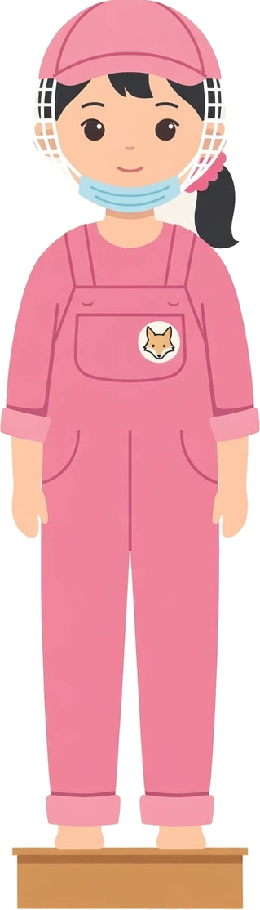
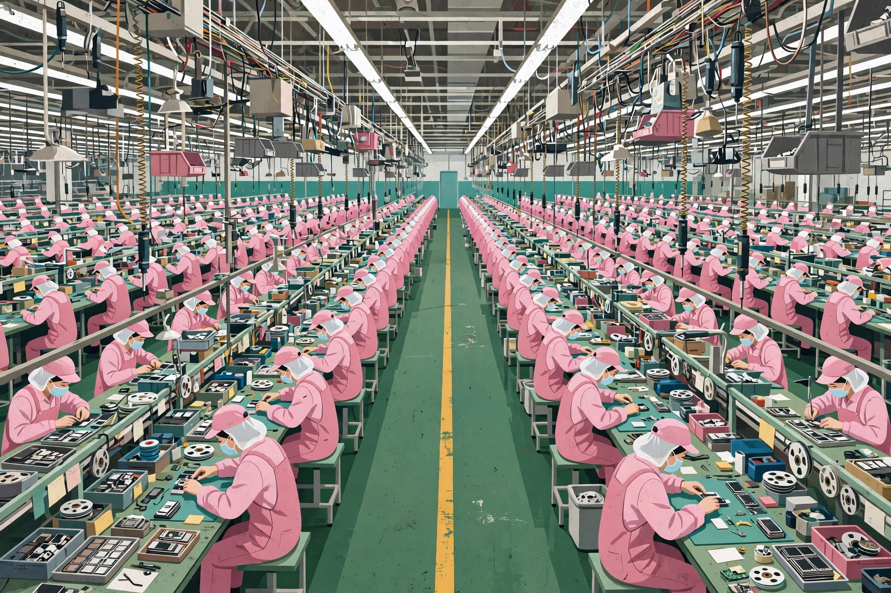
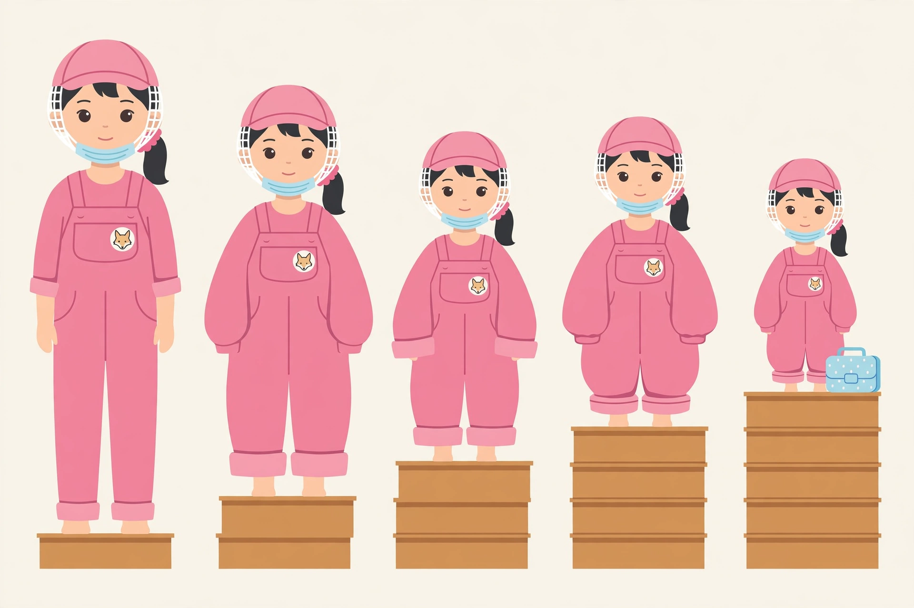

<!doctype html>
<html lang="en">
<head>
<meta charset="utf-8" />
<meta name="viewport" content="width=device-width, initial-scale=1, maximum-scale=1, user-scalable=no, viewport-fit=cover" />
<meta name="color-scheme" content="light dark" />
<!-- PWA — installable app packaging. The web app manifest lives in
     assets/ (only index.html + assets/ are served), so its icon paths
     are relative to assets/ and its start_url/scope step up one level
     ("../") to the page itself; that keeps the manifest correct both
     on the Muse host and on GitHub Pages. iOS Safari has no automatic
     install prompt: the Apple meta tags + apple-touch-icon below are
     what Share ->
<title>PhoneFactory — a CoyoTech production</title>
<link rel="preconnect" href="https://fonts.googleapis.com" />
<link rel="preconnect" href="https://fonts.gstatic.com" crossorigin />
<link href="https://fonts.googleapis.com/css2?family=Barlow+Condensed:wght@600;700;800&family=Barlow:wght@500;600;700&display=swap" rel="stylesheet" />
<script>
  /* Installed-PWA detection for the top shift below. iOS Safari's
     legacy standalone flag is covered here; standards-based browsers
     are covered by the (display-mode: standalone) media query in CSS.
     Runs in <head> so the class is set before first paint. */
  (function(){
    try{
      if(window.navigator.standalone === true ||
         (window.matchMedia && window.matchMedia("(display-mode: standalone)").matches)){
        document.documentElement.classList.add("is-standalone");
      }
    }catch(e){}
  })();
</script>
<style>
  :root{
    color-scheme: light dark;
    --pwa-shift:0px;
    --bar-bg:#ffffff; --bar-ink:#1d242e; --bar-muted:#66707c; --bar-line:#dde3dd;
    --pink:#ef8fab; --pink-deep:#d1406f;
    --green:#1e9e6a; --green-deep:#0c5c3c; --green-dark:#0a4630;
    --amber:#f0a500; --yellow:#ffd21f; --red:#e23b3b;
    --card:#ffffff; --card-ink:#1d242e; --chip:#eef1ec; --chip-muted:#44505c;
    --gen-ink:#d1406f; --strike:#e23b3b;
    --shadow:0 6px 18px rgba(6,40,26,.28);
  }
  @media (prefers-color-scheme: dark){
    :root{
      --bar-bg:#141b22; --bar-ink:#eef2f0; --bar-muted:#a9bccb; --bar-line:#43586a;
      --card:#f7f5ef; --gen-ink:#ff9dbd; --strike:#ff7a7a;
    }
  }
  /* ===== standalone PWA top shift =====
     When installed (display-mode: standalone, incl. iOS standalone via
     the .is-standalone class set in <head>), pad the app down so the
     top bar sits just below the status-bar / Dynamic Island zone and
     the iOS blurry scroll-edge band that lives in it. History: a flat
     40px left the wallet row inside the blur (40px is INSIDE the
     safe area on modern iPhones); a flat 90px overshot — stacked on
     top of the status-bar area it left a quarter-screen green band
     and read as the bar floating low. The shift is now derived from
     the device's own safe-area-inset-top (47px notch / 59px Dynamic
     Island) plus a small 10px margin, floored at 56px for devices
     that report a small or zero inset — so the bar lands just below
     the blurry line on every phone instead of a one-size guess.
     In a normal browser tab --pwa-shift stays 0 and nothing moves.
     #app is box-sizing:border-box, so the shift is taken from the
     top of the flex column and the single-screen, no-scroll layout
     still fits exactly. The strip above the top bar shows the body's
     dark green background. */
  @media (display-mode: standalone){
    :root{ --pwa-shift:max(56px, calc(env(safe-area-inset-top, 0px) + 10px)); }
  }
  html.is-standalone{ --pwa-shift:max(56px, calc(env(safe-area-inset-top, 0px) + 10px)); }
  *{box-sizing:border-box;-webkit-touch-callout:none;-webkit-tap-highlight-color:transparent}
  html,body{height:100%;touch-action:manipulation;overscroll-behavior:none}
  /* ===== bottom gap: paint the CANVAS, not a strip inside #app =====
     Diagnosis (measured from the user's screenshots): across three
     builds with three different app-height mechanisms (100dvh chain,
     full-height fill, position:fixed inset:0) the bottom bar ended
     at the exact same pixel and the green strip below it was the
     exact same height (~48pt). The container's height was never the
     variable: in iOS standalone the CSS layout viewport itself lands
     short of the physical screen bottom, so EVERY in-page box —
     #app included, however it is sized — ends at the layout
     viewport's bottom edge, and the remaining strip is painted by
     the propagated root background (the body's dark green). No
     element inside #app can ever paint there, which is why the
     extension strip was clipped and inset:0 changed nothing.
     Fix: give <html> a background whose bottom band is the bottom
     bar's colour. The root background propagates to the whole
     canvas — full physical screen, below the layout viewport
     included — and is never clipped by #app's overflow:hidden.
     The green layer covers everything except the bottom 64px
     (taller than the measured ~48pt strip, shorter than the bar
     itself incl. its safe-area padding, so the seam always lands
     hidden inside the bar's own background), and the dark
     background-color fills that band and anything below the
     gradient if a browser sizes it against the root box instead
     of the canvas. Top is untouched: the gradient's green is the
     same --green-dark the body already showed above the top bar. */
  html{background-color:var(--bar-bg);
    background-image:linear-gradient(180deg,var(--green-dark),var(--green-dark));
    background-size:100% calc(100% - 64px);background-repeat:no-repeat;background-position:top center}
  body{margin:0;overflow:hidden;background:var(--green-dark);color:var(--bar-ink);
    font-family:"Barlow",system-ui,-apple-system,"Segoe UI",sans-serif;
    user-select:none;-webkit-user-select:none;position:fixed;inset:0;width:100%}
  button{touch-action:manipulation;font:inherit;cursor:pointer}
  button:focus-visible{outline:3px solid var(--yellow);outline-offset:2px}
  img{display:block;max-width:100%}
  svg{display:block}
  /* #app is anchored to the layout viewport's edges with
     position:fixed inset:0 instead of being sized by a height
     value: both height:100dvh and the height:100% chain
     (html → body → #app) rendered the app inset in the middle of
     the screen, while fixed inset:0 at least pins the flex column
     to the full layout viewport — top bar at the top (below the
     --pwa-shift padding), bottom bar at the layout viewport's
     bottom edge. NOTE: measured on device, that bottom edge is
     itself ~48pt short of the physical screen bottom in iOS
     standalone — see the html background note above for the
     canvas paint that carries the bar's colour the rest of the
     way. */
  /* Sizing: #app is sized by inset:0 ALONE (height:auto) — no
     viewport-unit height at all. The previous height:100lvh
     OVERSHOT: the large-viewport height is taller than the visible
     layout viewport in iOS standalone, so #app stretched past the
     screen's bottom edge and pushed the footer with it — the
     bar's buttons were clipped at their bottom edges. With
     top:0 + bottom:0 and height:auto, #app is exactly the layout
     viewport: the footer (flex:none, last child) sits fully
     inside it, buttons completely visible, and the footer's own
     background — safe-area padding included — fills down to
     #app's bottom edge. Any strip below the layout viewport on
     iOS is still painted the bar's colour by the propagated html
     canvas background above, so the dark bar reads as reaching
     the physical screen edge with no green strip below it. */
  #app{position:fixed;inset:0;height:auto;display:flex;flex-direction:column;overflow:hidden;padding-top:var(--pwa-shift)}

  /* ===== top bar ===== */
  header.hud{flex:none;background:var(--bar-bg);color:var(--bar-ink);border-bottom:3px solid var(--green);position:relative;z-index:20}
  .hud-l1{display:flex;align-items:center;gap:8px;padding:5px 10px 0}
  .hud-title{font-family:"Barlow Condensed",sans-serif;font-weight:800;font-size:21px;letter-spacing:.02em;line-height:1.05;white-space:nowrap}
  .hud-title .gen{color:var(--gen-ink);font-weight:700;font-size:16px}
  .hud-wallet{margin-left:auto;display:flex;align-items:center;gap:4px;font-family:"Barlow Condensed",sans-serif;font-weight:700;font-size:16px;color:var(--bar-muted);white-space:nowrap}
  .hud-wallet svg{width:15px;height:15px}
  .hud-strikes{font-size:14px;letter-spacing:3px;color:var(--strike);white-space:nowrap;line-height:1;margin-left:8px}
  .hud-l2{display:flex;align-items:center;gap:14px;padding:1px 10px 5px;font-variant-numeric:tabular-nums}
  .hud-stat{display:flex;align-items:center;gap:5px;white-space:nowrap}
  .hud-stat svg{width:17px;height:17px;color:var(--bar-muted)}
  .hud-stat .v{font-family:"Barlow Condensed",sans-serif;font-weight:700;font-size:19px;line-height:1}
  .hud-stat .v.hot{color:var(--pink-deep)}
  .hud-quota{flex:1;display:flex;align-items:center;gap:7px;min-width:0}
  .hud-quota svg{width:17px;height:17px;flex:none;color:var(--bar-muted)}
  .hud-quota .bar{flex:1;height:10px;border-radius:6px;background:var(--bar-line);overflow:hidden}
  .hud-quota .bar i{display:block;height:100%;width:0%;background:var(--pink-deep);border-radius:6px;transition:width .25s}
  .hud-quota .v{font-family:"Barlow Condensed",sans-serif;font-weight:700;font-size:17px;white-space:nowrap}

  /* ===== stage ===== */
  #stage{position:relative;flex:1;min-height:0;display:flex;flex-direction:column;overflow:hidden;
    background:linear-gradient(180deg,#0e5c3d 0%,#0a4630 100%)}
  .stage-bg{position:absolute;inset:0;overflow:hidden;opacity:.30;pointer-events:none;background:#0a4630}
  /* ===== drone fly-through background video =====
     The v2 drone loop video (assets/drone-loop-v2.mp4): the same
     hall composition — central aisle, green benches, pink-overall
     workers — with an infinite horizon, flying forward endlessly.
     It fills .stage-bg edge to edge (object-fit:cover), muted,
     autoplay, looping, and plays at half speed: playbackRate 0.5
     is set in the script at the bottom of this file, so the 10s
     clip takes 20s per pass and the flight stays calm behind the
     gameplay. The .30 opacity on .stage-bg plus the shade above
     keep it readable. Under prefers-reduced-motion the video is
     hidden and the static hero image shows instead. */
  .stage-bg video{position:absolute;inset:0;width:100%;height:100%;object-fit:cover;object-position:center}
  @media (prefers-reduced-motion: reduce){
    .stage-bg video{display:none}
    .stage-bg{background-image:url("assets/hero-factory.webp");background-size:cover;background-position:center 22%}
  }
  .stage-shade{position:absolute;inset:0;background:linear-gradient(180deg,rgba(7,46,31,.42),rgba(7,46,31,.66) 46%,rgba(6,38,26,.92));pointer-events:none}
  .stage-in{position:relative;flex:1;min-height:0;display:flex;flex-direction:column;gap:5px;padding:6px 8px 7px}
  #toast{position:absolute;top:8px;left:50%;transform:translateX(-50%) scale(.9);z-index:30;
    background:var(--yellow);color:#231a00;font-family:"Barlow Condensed",sans-serif;font-weight:800;
    font-size:19px;letter-spacing:.03em;padding:4px 16px;border-radius:999px;box-shadow:var(--shadow);
    opacity:0;pointer-events:none;transition:opacity .18s,transform .18s;white-space:nowrap;max-width:92vw;overflow:hidden;text-overflow:ellipsis}
  #toast.show{opacity:1;transform:translateX(-50%) scale(1)}
  #toast.bad{background:var(--red);color:#fff}
  #toast.good{background:var(--green);color:#fff}

  /* ===== phone order cards: many orders at once, pick who to save ===== */
  .phones{flex:none;display:flex;gap:6px}
  .phone{flex:1;min-width:0;background:var(--card);color:var(--card-ink);border:3px solid rgba(255,255,255,.35);
    border-radius:13px;padding:5px 6px 6px;text-align:left;position:relative;box-shadow:var(--shadow);
    display:flex;flex-direction:column;gap:3px}
  .phone.focused{border-color:var(--yellow)}
  .phone.ready{border-color:var(--green);background:#e9f9ef}
  .phone.rush{background:#fff6d8}
  .phone.late{border-color:var(--red);background:#ffeded}
  .phone.late .p-val{background:var(--red);color:#fff}
  .phone .p-late{background:var(--red);color:#fff;font-family:"Barlow Condensed",sans-serif;font-weight:800;font-size:11px;letter-spacing:.06em;line-height:1;padding:3px 6px;border-radius:999px;white-space:nowrap;animation:pulse .7s infinite alternate}
  .phone .p-orig{font-size:11px;font-weight:700;color:var(--strike);text-decoration:line-through;white-space:nowrap}
  .phone .p-top{display:flex;align-items:center;gap:5px}
  .phone .p-val{background:var(--green);color:#fff;font-family:"Barlow Condensed",sans-serif;font-weight:700;font-size:14px;line-height:1;padding:3px 7px;border-radius:999px;white-space:nowrap}
  .phone .p-sku{font-family:"Barlow Condensed",sans-serif;font-weight:700;font-size:13.5px;letter-spacing:.05em;text-transform:uppercase;color:var(--chip-muted);white-space:nowrap;overflow:hidden;text-overflow:ellipsis}
  .phone.rush .p-val{background:var(--amber);color:#2a1c00}
  .phone .p-ready{margin-left:auto;background:var(--green);color:#fff;border-radius:50%;width:20px;height:20px;display:flex;align-items:center;justify-content:center}
  .phone .p-ready svg{width:13px;height:13px}
  .phone .p-rushdot{width:8px;height:8px;border-radius:50%;background:var(--amber);flex:none;animation:pulse .7s infinite alternate}
  .phone .seq{display:flex;flex-wrap:wrap;gap:3px}
  .phone .seq .pc{width:20px;height:20px;border-radius:6px;background:#e7e4da;color:#5f6b76;display:flex;align-items:center;justify-content:center}
  .phone .seq .pc svg{width:14px;height:14px}
  .phone .seq .pc.done{background:#bfe8cf;color:var(--green-deep)}
  .phone .seq .pc.have{background:var(--yellow);color:#4a3800;animation:pulse .55s infinite alternate}
  .phone .pat{height:7px;border-radius:5px;background:#e3ded0;overflow:hidden}
  .phone .pat i{display:block;height:100%;background:var(--green);border-radius:5px}
  .phone .pat i.low{background:var(--red)}
  .phone .pat i.late{background:var(--red)}
  .phone.empty{align-items:center;justify-content:center;border-style:dashed;box-shadow:none;background:rgba(255,255,255,.12);color:#cfe6d8;min-height:64px}
  .phone.empty svg{width:22px;height:22px;opacity:.6}
  @keyframes pulse{from{transform:scale(1)}to{transform:scale(1.14)}}
  /* ===== final assembly: when a phone becomes ready, a finished
     powered-on front seals over the exposed parts (2D fallback;
     the 3D bench plays the same sequence in three.js) ===== */
  .fin-seal{transform-origin:52px 86px;animation:sealIn .95s cubic-bezier(.2,.9,.3,1.2)}
  @keyframes sealIn{0%{opacity:0;transform:scale(1.14)}45%{opacity:1}100%{opacity:1;transform:scale(1)}}
  .fin-shine{animation:finShine .95s ease-out}
  @keyframes finShine{0%{transform:translateX(-42px);opacity:0}30%{opacity:.6}100%{transform:translateX(34px);opacity:.35}}
  .bench.celebrate::after{content:"";position:absolute;inset:6px;border:3px solid var(--yellow);border-radius:18px;
    pointer-events:none;animation:ringPulse 1.25s ease-out forwards}
  @keyframes ringPulse{0%{opacity:.95;transform:scale(.94)}100%{opacity:0;transform:scale(1.05)}}

  /* ===== bench: focused phone in 3D + Lin + two hands ===== */
  .bench{flex:1;min-height:0;display:flex;align-items:center;justify-content:center;position:relative}
  .bench-phone{height:100%;max-height:100%;aspect-ratio:104/172;filter:drop-shadow(0 10px 14px rgba(0,0,0,.45));pointer-events:none}
  #bench3d{flex:1 1 auto;min-width:0;height:100%;position:relative;display:none;touch-action:none;pointer-events:auto;cursor:grab;outline:none}
  #bench3d:active{cursor:grabbing}
  #bench3d:focus-visible{box-shadow:inset 0 0 0 2px var(--yellow);border-radius:12px}
  #bench3d canvas{position:absolute;inset:0;width:100%;height:100%;pointer-events:none}
  .rotate-hint{position:absolute;top:4px;right:4px;z-index:2;display:none;align-items:center;gap:5px;
    background:rgba(8,30,20,.55);color:#dff3e6;font-size:11px;font-weight:700;letter-spacing:.04em;
    padding:3px 9px;border-radius:999px;pointer-events:none;transition:opacity .4s}
  .rotate-hint svg{width:13px;height:13px}
  .bench.has3d .rotate-hint{display:flex}
  .rotate-hint.gone{opacity:0}
  .bench.has3d #bench3d{display:block}
  .bench.has3d .bench-phone{display:none}
  .lin-chip{position:absolute;left:2px;bottom:0;height:min(88%,230px);width:auto;pointer-events:none;filter:drop-shadow(0 4px 6px rgba(0,0,0,.4))}
  .hands{position:absolute;right:2px;bottom:2px;display:flex;gap:6px;z-index:3}
  .hand{width:46px;height:46px;border-radius:50%;border:2.5px dashed rgba(255,255,255,.55);background:rgba(10,20,16,.55);
    display:flex;align-items:center;justify-content:center;color:#cfe6d8;padding:0}
  .hand svg{width:24px;height:24px}
  .hand.full{border-style:solid;border-color:var(--yellow);background:#fdfcf7;color:var(--card-ink)}
  .hand:active{transform:scale(.93)}

  /* ===== timed stations: start, leave, beep when done ===== */
  .stations{flex:none;display:flex;gap:6px}
  .station{flex:1;background:#083322;border:2px solid #14603f;border-radius:12px;color:#dff3e6;
    display:flex;flex-direction:column;align-items:center;gap:1px;padding:5px 4px 6px;position:relative;overflow:hidden}
  .station svg{width:22px;height:22px}
  .station .s-name{font-family:"Barlow Condensed",sans-serif;font-weight:700;font-size:11.5px;letter-spacing:.07em;text-transform:uppercase;color:#a9d8bd}
  .station .s-bar{width:100%;height:5px;border-radius:3px;background:rgba(255,255,255,.16);overflow:hidden}
  .station .s-bar i{display:block;height:100%;width:0%;background:var(--sky,#57b8d6);background:var(--yellow)}
  .station .s-count{position:absolute;top:3px;right:6px;font-family:"Barlow Condensed",sans-serif;font-weight:800;font-size:13px;color:var(--yellow)}
  .station.done{border-color:var(--green);background:#0d5c36;animation:stationFlash .5s infinite alternate}
  .station.done .s-name{color:#fff}
  @keyframes stationFlash{from{box-shadow:0 0 0 0 rgba(30,158,106,0)}to{box-shadow:0 0 0 5px rgba(30,158,106,.55)}}
  .station:active{transform:translateY(2px)}

  /* ===== parts tray ===== */
  .tray{flex:none;background:#083322;border:1px solid #14603f;border-radius:14px;padding:6px}
  .parts{display:grid;grid-template-columns:repeat(4,1fr);gap:6px}
  .part{background:#fdfcf7;border:none;border-bottom:5px solid #cfccc0;border-radius:12px;color:var(--card-ink);
    display:flex;flex-direction:column;align-items:center;justify-content:center;gap:0;
    padding:5px 2px 3px;min-height:54px;position:relative}
  .part svg{width:26px;height:26px}
  .parts.many .part{min-height:44px;padding-top:3px}
  .parts.many .part svg{width:21px;height:21px}
  .part span{font-size:10px;font-weight:700;line-height:1.1;color:#4c565f}
  .part .st-badge{position:absolute;top:3px;right:4px;width:15px;height:15px;border-radius:50%;background:var(--pink-deep);color:#fff;display:flex;align-items:center;justify-content:center}
  .part .st-badge svg{width:10px;height:10px}
  .part:active{transform:translateY(3px);border-bottom-width:2px}
  .part.wrong{animation:shake .3s}
  @keyframes shake{0%,100%{transform:translateX(0)}25%{transform:translateX(-5px)}75%{transform:translateX(5px)}}
  .fx{position:absolute;pointer-events:none;font-family:"Barlow Condensed",sans-serif;font-weight:800;font-size:26px;
    color:var(--yellow);text-shadow:0 2px 6px rgba(0,0,0,.55);animation:floatUp .9s ease-out forwards;z-index:40}
  @keyframes floatUp{from{opacity:1;transform:translateY(0) scale(1)}to{opacity:0;transform:translateY(-52px) scale(1.15)}}
  @media (prefers-reduced-motion: reduce){
    .part.wrong,.phone .seq .pc.have,.phone .p-rushdot,.phone .p-late,.station.done,.fin-seal,.fin-shine,.bench.celebrate::after{animation:none}
    .bench.celebrate::after{display:none}
    .fx{animation-duration:.01s}.hud-quota .bar i{transition:none}
  }

  /* ===== bottom bar ===== */
  footer.bar{flex:none;margin-top:auto;display:flex;gap:7px;background:var(--bar-bg);border-top:1px solid var(--bar-line);
    padding:7px 8px calc(7px + env(safe-area-inset-bottom));position:relative}
  /* The bar is anchored to the bottom of the flex column twice
     over: it is the last child AND has margin-top:auto, so it sits
     at #app's bottom edge even if the stage above it under-fills.
     Its own background — including the env(safe-area-inset-bottom)
     padding, which keeps the buttons clear of the home indicator —
     fills to #app's bottom edge. The remaining strip BELOW #app on
     iOS (layout viewport shorter than the physical screen; see the
     html background note at the top of this stylesheet) is painted
     this same colour by the propagated root background, so the
     bar's colour continues to the physical screen edge. No
     extension strip is used: anything painted past #app's box is
     clipped by its overflow:hidden and can never show there. */
  .btn-play{flex:1;background:var(--pink-deep);color:#fff;border:none;border-radius:12px;
    display:flex;align-items:center;justify-content:center;gap:8px;
    font-family:"Barlow Condensed",sans-serif;font-weight:800;font-size:21px;letter-spacing:.05em;padding:9px 10px}
  .btn-play svg{width:22px;height:22px}
  .btn-play:active{background:var(--green)}
  .btn-play.chain{background:var(--green)}
  .btn-play .chain-tag{background:var(--yellow);color:#231a00;font-size:14px;padding:1px 8px;border-radius:999px}
  .btn-icon{background:transparent;color:var(--bar-ink);border:1px solid var(--bar-line);border-radius:12px;
    width:52px;display:flex;align-items:center;justify-content:center;padding:6px 0}
  .btn-icon svg{width:23px;height:23px}
  .btn-icon:active{background:#fdeef3}
  @media (prefers-color-scheme: dark){ .btn-icon:active{background:#3a2430} }

  /* ===== overlays ===== */
  .overlay{position:fixed;inset:0;background:rgba(6,24,17,.9);display:none;align-items:center;justify-content:center;padding:14px;padding-top:calc(14px + var(--pwa-shift));z-index:90}
  .overlay.show{display:flex}
  .card{background:var(--card);color:var(--card-ink);border-radius:18px;max-width:400px;width:100%;box-shadow:var(--shadow);overflow:hidden;max-height:94dvh;overflow-y:auto}
  .card .hero{width:100%;height:auto;aspect-ratio:16/9;object-fit:cover;object-position:center 26%;background:#0e3a2a}
  .card .pad{padding:13px 16px 16px;text-align:center}
  .card h3{font-family:"Barlow Condensed",sans-serif;font-weight:800;font-size:32px;margin:0;line-height:1;text-transform:uppercase}
  .card .sub{font-family:"Barlow Condensed",sans-serif;font-weight:700;color:var(--pink-deep);letter-spacing:.08em;text-transform:uppercase;font-size:15px}
  .card .stats{display:flex;gap:6px;justify-content:center;margin:12px 0 4px}
  .card .stats div{flex:1;background:var(--chip);border-radius:11px;padding:7px 4px;font-size:11px;font-weight:700;color:var(--chip-muted);text-transform:uppercase;letter-spacing:.05em}
  .card .stats b{display:block;font-size:21px;font-family:"Barlow Condensed",sans-serif;color:var(--card-ink);letter-spacing:0;text-transform:none}
  .card .btn-row{display:flex;gap:8px;justify-content:center;margin-top:12px;flex-wrap:wrap}
  .btn-card{background:var(--pink-deep);color:#fff;border:none;border-radius:12px;padding:11px 22px;
    font-family:"Barlow Condensed",sans-serif;font-weight:800;font-size:20px;letter-spacing:.05em;
    display:inline-flex;align-items:center;gap:8px}
  .btn-card svg{width:19px;height:19px}
  .btn-card:active{background:var(--green)}
  .btn-card.ghost{background:var(--chip);color:var(--card-ink);box-shadow:inset 0 0 0 2px #c9cdc2}
  .legend{display:grid;grid-template-columns:1fr 1fr;gap:6px 12px;text-align:left;margin:10px 0 2px;font-size:13.5px;font-weight:600}
  .legend div{display:flex;align-items:center;gap:8px}
  .legend svg{width:24px;height:24px;flex:none}
  .gen-list{display:flex;flex-direction:column;gap:7px;margin:10px 0 2px}
  .gen-btn{display:flex;align-items:center;gap:10px;background:var(--chip);border:2px solid transparent;border-radius:12px;padding:9px 12px;text-align:left;color:var(--card-ink)}
  .gen-btn:active{border-color:var(--pink-deep)}
  .gen-btn .nm{font-family:"Barlow Condensed",sans-serif;font-weight:800;font-size:20px;line-height:1}
  .gen-btn .md{display:block;font-size:12.5px;color:var(--chip-muted);font-weight:600}
  .gen-btn .q{margin-left:auto;font-family:"Barlow Condensed",sans-serif;font-weight:800;font-size:19px;color:var(--green-deep);white-space:nowrap}
  .linimg{width:100%;height:auto;aspect-ratio:3/2;object-fit:contain;background:#f8f4ec;border-radius:11px;margin-top:10px}
  /* ===== How to play: single column, fills the phone screen, no scrolling =====
     Layout (top to bottom): lead image, title + instructions, workers
     image, Play button. The lead image is a full-width banner CROPPED
     to fit (object-fit:cover) — it fills the card edge to edge with no
     side bars. The workers image stays decorative below the
     instructions and above Play; it is the one flexible element, so on
     shorter phones it scales down (contain, whole sheet visible, cream
     background matching the sheet) instead of pushing Play off-screen
     or forcing the card to scroll. */
  #infoOverlay{padding:10px 8px;padding-top:calc(10px + var(--pwa-shift));align-items:stretch}
  /* height:100% of the overlay's content box (the overlay is fixed
     inset:0 with the shift already in its top padding) — no dvh,
     which measured short on device; the card fills the overlay
     exactly, top padding to bottom padding. */
  #infoOverlay .card{display:flex;flex-direction:column;height:100%;max-height:100%;overflow:hidden}
  #infoOverlay .hero{flex:0 0 auto;width:100%;max-width:100%;height:clamp(118px,21dvh,196px);aspect-ratio:auto;object-fit:cover;object-position:center 26%;background:#0e3a2a}
  #infoOverlay .pad{flex:0 0 auto;display:flex;flex-direction:column;padding:12px 16px 0}
  #infoOverlay h3{font-size:32px}
  #infoOverlay .legend{gap:8px 12px;margin:10px 0 0;font-size:14px;line-height:1.35}
  #infoOverlay .legend svg{width:24px;height:24px}
  #infoOverlay .linimg{flex:1 1 auto;min-height:0;width:100%;height:auto;aspect-ratio:auto;object-fit:contain;background:#f8f4ec;margin:10px 0 0;border-radius:0}
  #infoOverlay .btn-row{flex:0 0 auto;margin:0;padding:12px 16px 14px}
  #infoOverlay .btn-card{padding:11px 30px;font-size:20px}
  @media (max-height:880px){
    #infoOverlay .hero{height:clamp(104px,18dvh,160px)}
    #infoOverlay h3{font-size:27px}
    #infoOverlay .legend{font-size:13.5px;gap:6px 12px;margin-top:8px;line-height:1.3}
    #infoOverlay .pad{padding-top:10px}
    #infoOverlay .btn-row{padding:10px 16px 12px}
    #infoOverlay .btn-card{padding:10px 28px}
  }
  @media (max-height:700px){
    #infoOverlay .hero{height:clamp(84px,15dvh,120px)}
    #infoOverlay h3{font-size:26px}
    #infoOverlay .legend{font-size:12.5px;gap:5px 9px;margin-top:6px;line-height:1.3}
    #infoOverlay .legend svg{width:20px;height:20px}
    #infoOverlay .pad{padding:8px 13px 0}
    #infoOverlay .linimg{margin-top:6px}
    #infoOverlay .btn-row{padding:8px 13px 10px}
    #infoOverlay .btn-card{padding:8px 26px;font-size:19px}
  }
  /* upgrade shop */
  .shop-list{display:flex;flex-direction:column;gap:7px;margin:10px 0 2px}
  .upg{display:flex;align-items:center;gap:10px;background:var(--chip);border:2px solid transparent;border-radius:12px;padding:8px 11px;text-align:left;color:var(--card-ink);width:100%}
  .upg svg{width:28px;height:28px;flex:none;color:var(--pink-deep)}
  .upg .u-nm{font-family:"Barlow Condensed",sans-serif;font-weight:800;font-size:19px;line-height:1}
  .upg .u-md{display:block;font-size:12px;color:var(--chip-muted);font-weight:600}
  .upg .u-price{margin-left:auto;font-family:"Barlow Condensed",sans-serif;font-weight:800;font-size:18px;color:var(--green-deep);white-space:nowrap}
  .upg.owned{border-color:var(--green);opacity:.85}
  .upg.owned .u-price{color:var(--green)}
  .upg.poor{opacity:.5}
  .wallet-line{font-family:"Barlow Condensed",sans-serif;font-weight:800;font-size:20px;color:var(--green-deep)}
</style>
</head>
<body>
<div id="app">

  <header class="hud">
    <div class="hud-l1">
      <div class="hud-title"><span id="stLevel"></span> <span class="gen" id="stModel"></span></div>
      <div class="hud-wallet" title="Wallet">
        <svg viewBox="0 0 24 24" fill="none" stroke="currentColor" stroke-width="2" stroke-linecap="round"><rect x="3" y="6" width="18" height="13" rx="3"/><path d="M16 12.5h.01M3 10h18"/></svg>
        <span id="stWallet">¥0</span>
      </div>
      <div class="hud-strikes" id="stStrikes" title="Cancelled orders">○○○</div>
    </div>
    <div class="hud-l2">
      <div class="hud-quota">
        <svg viewBox="0 0 24 24" fill="none" stroke="currentColor" stroke-width="2" stroke-linecap="round" aria-hidden="true"><circle cx="12" cy="12" r="9"/><path d="M12 7v10M15 9.2c-.6-1-1.7-1.4-3-1.4-1.7 0-3 .9-3 2.2 0 3 6 1.8 6 4.2 0 1.3-1.3 2.2-3 2.2-1.3 0-2.4-.5-3-1.4"/></svg>
        <div class="bar"><i id="stQuotaBar"></i></div>
        <span class="v"><span id="stCred">0</span>/<span id="stQuota">0</span></span>
      </div>
      <div class="hud-stat">
        <svg viewBox="0 0 24 24" fill="none" stroke="currentColor" stroke-width="2" stroke-linecap="round" aria-hidden="true"><circle cx="12" cy="13" r="8"/><path d="M12 9v4l2.5 2.5M9 2.5h6"/></svg>
        <span class="v" id="stClock">0:00</span>
      </div>
      <div class="hud-stat">
        <svg viewBox="0 0 24 24" fill="none" stroke="currentColor" stroke-width="2" stroke-linecap="round" stroke-linejoin="round" aria-hidden="true"><path d="M3 8h11v9H3zM14 11h4l3 3v3h-7z"/><circle cx="7" cy="17" r="1.8"/><circle cx="17" cy="17" r="1.8"/></svg>
        <span class="v" id="stReady">0</span>
      </div>
    </div>
  </header>

  <main id="stage">
    <div class="stage-bg" aria-hidden="true"><video id="bgVideo" src="assets/drone-loop-v2.mp4" poster="assets/hero-factory.webp" muted loop autoplay playsinline preload="auto"></video></div>
    <div class="stage-shade" aria-hidden="true"></div>
    <div id="toast" role="status"></div>
    <div class="stage-in">
      <div class="phones" id="phones"></div>
      <div class="bench" id="bench">
        <div id="bench3d" tabindex="0" role="img" aria-label="The focused phone in 3D, assembling part by part as you deliver parts. Drag to rotate it; double-tap to face front again."></div>
        <div class="rotate-hint" id="rotateHint" aria-hidden="true"><svg viewBox="0 0 24 24" fill="none" stroke="currentColor" stroke-width="2.2" stroke-linecap="round" stroke-linejoin="round"><path d="M21 12a9 9 0 1 1-2.6-6.4"/><path d="M21 3v6h-6"/></svg>Drag to rotate</div>
        <svg class="bench-phone" viewBox="0 0 104 172" role="img" aria-label="The focused phone, filling with parts as you deliver them">
          <defs>
            <linearGradient id="finGrad" x1="0" y1="0" x2="1" y2="1">
              <stop offset="0" stop-color="#0e5c3d"/><stop offset="0.45" stop-color="#57b8d6"/><stop offset="1" stop-color="#ef8fab"/>
            </linearGradient>
          </defs>
          <rect x="6" y="4" width="92" height="164" rx="15" fill="#232a33" stroke="#5a6a76" stroke-width="2.5"/>
          <g id="phParts"></g>
          <g id="phFinish"></g>
          <rect x="30" y="156" width="44" height="5" rx="2.5" fill="#46545f"/>
        </svg>
        
        <div class="hands" id="hands"></div>
      </div>
      <div class="stations" id="stations"></div>
      <div class="tray"><div class="parts" id="parts"></div></div>
    </div>
  </main>

  <footer class="bar">
    <button class="btn-play" id="btnMain">
      <span id="btnMainIcon"></span>
      <span id="btnMainLabel">Clock In</span>
      <span class="chain-tag" id="btnChain" style="display:none"></span>
    </button>
    <button class="btn-icon" id="btnMute" aria-pressed="false" aria-label="Sound on or off">
      <svg viewBox="0 0 24 24" fill="none" stroke="currentColor" stroke-width="2" stroke-linecap="round" stroke-linejoin="round" aria-hidden="true"><path d="M11 5 6 9H3v6h3l5 4z"/><path id="muteWaves" d="M15.5 8.5a5 5 0 0 1 0 7M18.4 5.6a9 9 0 0 1 0 12.8"/></svg>
    </button>
    <button class="btn-icon" id="btnInfo" aria-label="How to play">
      <svg viewBox="0 0 24 24" fill="none" stroke="currentColor" stroke-width="2" stroke-linecap="round" aria-hidden="true"><circle cx="12" cy="12" r="9"/><path d="M12 11v5"/><circle cx="12" cy="8" r="0.6" fill="currentColor"/></svg>
    </button>
    <button class="btn-icon" id="btnMenu" aria-label="Generations">
      <svg viewBox="0 0 24 24" fill="none" stroke="currentColor" stroke-width="2.4" stroke-linecap="round" aria-hidden="true"><path d="M4 7h16M4 12h16M4 17h16"/></svg>
    </button>
  </footer>
</div>

<div class="overlay" id="overlay"><div class="card" id="overlayCard"></div></div>

<div class="overlay" id="infoOverlay">
  <div class="card">
    
    <div class="pad">
      <h3>How to play</h3>
      <div class="legend">
        <div><svg viewBox="0 0 24 24" fill="none" stroke="#d1406f" stroke-width="2" stroke-linecap="round"><path d="M7 11V6a2 2 0 1 1 4 0v5V4a2 2 0 1 1 4 0v7V5a2 2 0 1 1 4 0v8c0 5-3 8-7 8s-6-2-8-6l-1.6-3.4A2 2 0 0 1 6 9.6z"/></svg>2 hands — carry 2 parts</div>
        <div><svg viewBox="0 0 24 24" fill="none" stroke="#d1406f" stroke-width="2" stroke-linecap="round"><circle cx="12" cy="12" r="8"/><path d="M12 8v4l3 2"/></svg>Station parts start in Gen 2</div>
        <div><svg viewBox="0 0 24 24" fill="none" stroke="#d1406f" stroke-width="2" stroke-linecap="round"><path d="M4 17V7l8-4 8 4v10"/><path d="M2 21h20"/></svg>Pink badge = station part — start it, go work</div>
        <div><svg viewBox="0 0 24 24" fill="none" stroke="#d1406f" stroke-width="2" stroke-linecap="round"><path d="M18 8a6 6 0 1 0-12 0c0 7-3 7-3 9h18c0-2-3-2-3-9ZM10 21a2 2 0 0 0 4 0"/></svg>Green flash + beep = done</div>
        <div><svg viewBox="0 0 24 24" fill="none" stroke="#d1406f" stroke-width="2" stroke-linecap="round"><rect x="6" y="3" width="12" height="18" rx="3"/></svg>Tap a phone to deliver</div>
        <div><svg viewBox="0 0 24 24" fill="none" stroke="#d1406f" stroke-width="2" stroke-linecap="round" stroke-linejoin="round"><path d="M3 8h11v9H3zM14 11h4l3 3v3h-7z"/><circle cx="7" cy="17" r="1.8"/><circle cx="17" cy="17" r="1.8"/></svg>Ship 2–3 at once = chain ¥</div>
        <div><svg viewBox="0 0 24 24" fill="none" stroke="#d1406f" stroke-width="2" stroke-linecap="round"><path d="M4 20 20 4M20 4h-6M20 4v6"/></svg>Late = less ¥, then cancelled</div>
        <div><svg viewBox="0 0 24 24" fill="none" stroke="#d1406f" stroke-width="2" stroke-linecap="round"><path d="M12 3v3M12 18v3M3 12h3M18 12h3M6 6l2 2M16 16l2 2M18 6l-2 2M8 16l-2 2"/></svg>Upgrades between generations</div>
      </div>
    </div>
    
    <div class="btn-row"><button class="btn-card" id="btnCloseInfo">Play</button></div>
  </div>
</div>

<div class="overlay" id="menuOverlay">
  <div class="card">
    <div class="pad">
      <div class="sub">CoyoTech · Line 7</div>
      <h3>Generations</h3>
      <div class="gen-list" id="genList"></div>
      <div class="btn-row">
        <button class="btn-card ghost" id="btnRestartGen">Restart</button>
        <button class="btn-card" id="btnCloseMenu">Close</button>
      </div>
    </div>
  </div>
</div>

<script src="https://cdnjs.cloudflare.com/ajax/libs/three.js/r128/three.min.js"></script>
<script>
(function(){
  "use strict";
  var $ = function(id){ return document.getElementById(id); };

  function ic(inner){ return '<svg viewBox="0 0 24 24" fill="none" stroke="currentColor" stroke-width="1.8" stroke-linecap="round" stroke-linejoin="round" aria-hidden="true">'+inner+'</svg>'; }
  var CLOCK_BADGE = '<span class="st-badge"><svg viewBox="0 0 24 24" fill="none" stroke="currentColor" stroke-width="3" stroke-linecap="round"><circle cx="12" cy="13" r="7"/><path d="M12 10v3l2 2M9 3h6"/></svg></span>';

  /* Parts: kind "instant" = pick straight up into a hand.
     kind "station" = tapping starts its timed station; when the station
     beeps done, tap the station to collect the finished part.
     Gen 1 bundle: Screen and Battery are NOT separate parts there —
     they are never listed in the Gen 1 tray or on a Gen 1 ticket.
     Frame is the only listed step for that bundle (see
     LEVELS[0].frameBundle): when Frame is placed, the phone visual
     shows Frame + Screen + Battery together. In later generations Battery
     returns as its own station part; Screws is a normal instant
     part in every generation. */
  var PARTS = {
    frame:  {name:"Frame",   kind:"instant", icon:ic('<rect x="4" y="3" width="16" height="18" rx="3"/><rect x="7.5" y="6.5" width="9" height="11" rx="1.5"/>')},
    board:  {name:"Board",   kind:"instant", icon:ic('<rect x="3" y="5" width="18" height="14" rx="2"/><path d="M7 9h4M7 15h7M15 9h2"/><circle cx="17" cy="15" r="1.2"/>')},
    chip:   {name:"Chip",    kind:"instant", icon:ic('<rect x="7" y="7" width="10" height="10" rx="1.5"/><path d="M10 7V4M14 7V4M10 20v-3M14 20v-3M7 10H4M7 14H4M20 10h-3M20 14h-3"/>')},
    battery:{name:"Battery", kind:"station", station:"test", icon:ic('<rect x="3" y="8" width="15" height="9" rx="2"/><path d="M21 11v3"/><rect x="5.5" y="10.5" width="7" height="4" fill="currentColor" stroke="none"/>')},
    camera: {name:"Camera",  kind:"instant", icon:ic('<rect x="3" y="3" width="18" height="18" rx="4"/><circle cx="12" cy="12" r="4"/><circle cx="12" cy="12" r="1" fill="currentColor"/>')},
    antenna:{name:"Antenna", kind:"instant", icon:ic('<path d="M12 20v-8"/><circle cx="12" cy="9" r="1.4" fill="currentColor"/><path d="M7.5 5.5a6.5 6.5 0 0 1 9 0M5 3a10 10 0 0 1 14 0"/>')},
    gasket: {name:"Glue",    kind:"station", station:"cure", icon:ic('<circle cx="12" cy="12" r="7.5"/><circle cx="12" cy="12" r="3.5"/><path d="M12 2.8v3M12 18.2v3M2.8 12h3M18.2 12h3"/>')},
    display:{name:"Display", kind:"station", station:"press", icon:ic('<rect x="5" y="3" width="14" height="18" rx="2.5"/><path d="M9 17l6-9"/>')},
    sim:    {name:"SIM",     kind:"instant", icon:ic('<path d="M6 4h9l3 3v13H6z"/><circle cx="12" cy="13" r="2.6"/>')},
    screws: {name:"Screws",  kind:"instant", icon:ic('<circle cx="8" cy="8" r="3"/><path d="M8 5.8v4.4M5.8 8h4.4"/><circle cx="16.5" cy="16.5" r="3"/><path d="M16.5 14.3v4.4M14.3 16.5h4.4"/>')},
    seal:   {name:"Seal",    kind:"instant", icon:ic('<path d="M12 3l7 3v5c0 5-3 8-7 10-4-2-7-5-7-10V6z"/><path d="M9 12l2.2 2.2L15.5 10"/>')}
  };
  var TRAY = ["frame","board","chip","camera","battery","display","gasket","screws"];

  var STATIONS = {
    press:{ name:"Press", part:"display", dur:3.5, icon:ic('<path d="M4 4h16M6 4v5h12V4M12 9v4M8 21h8M12 13l-3 5h6z"/>') },
    cure: { name:"Cure",  part:"gasket",  dur:5.0, icon:ic('<circle cx="12" cy="14" r="4"/><path d="M12 3v3M5 6l2 2M19 6l-2 2M4 21h16"/>') },
    test: { name:"Test",  part:"battery", dur:4.0, icon:ic('<path d="M13 2 5 13.5h5L9.5 22 19 10h-5.5z"/>') }
  };

  var UPGRADES = [
    { id:"press", name:"Turbo Press",   md:"Press 3.5s → 2.0s",        price:300, icon:STATIONS.press.icon },
    { id:"cure",  name:"Fast Cure Lamp", md:"Cure 5s → 3s",            price:300, icon:STATIONS.cure.icon },
    { id:"test2", name:"Test Bench ×2", md:"Test 2 batteries at once", price:450, icon:STATIONS.test.icon },
    { id:"screw", name:"Power Driver",  md:"All stations 25% faster",  price:250, icon:ic('<path d="M14 4l6 6-9 9H5v-6z"/><path d="M12 6l6 6"/>') },
    { id:"swift", name:"Swift Lin",     md:"Orders wait 30% longer",   price:350, icon:ic('<path d="M13 2 5 13.5h5L9.5 22 19 10h-5.5z"/>') }
  ];

  /* Level design: pacing by generation — Gen 5 is the cap, there
     is no Gen 6. "Waiting" parts are the timed station parts
     (Battery / Display / Glue); every other part is instant.
       Gen 1: 3–4 parts, 0 waiting
       Gen 2: 3–5 parts, at most 1 waiting
       Gen 3: 4–5 parts, at most 2 waiting
       Gen 4: 4–6 parts, at most 2 waiting
       Gen 5: 5–6 parts, at most 3 waiting — max difficulty
     Gen 1 is PURE assembly — every part is an instant pick-up,
     nothing cooks, no stations on the floor at all. A Gen 1 phone starts
     as a CLEAN SLATE: nothing is pre-installed, the bench and ticket
     start empty. Frame is a normal listed step the player picks up and
     places — but in Gen 1 placing Frame also brings Screen + Battery
     into the phone visual (LEVELS[0].frameBundle): they appear
     alongside Frame on the bench (SVG + 3D) yet are never listed as
     separate steps on the ticket or in the tray. The only variation
     is the SKU: five Gen 1 variants that share the same core
     (Frame + Board + Screws) and differ by a part or two.
     Timed station parts first appear in Gen 2, capped at one per
     phone there, then the cap and the part count ramp per the table
     above. Each level declares its own tray and station list, so the
     Gen 1 tray shows no clock badges and no station row exists. */
  var LEVELS = [
    { name:"Gen 1", quota:600, time:90, patience:42, spawn:5.0, era:1,
      tray:["frame","board","chip","camera","antenna","screws"],
      stations:[],
      frameBundle:["screen","battery"],
      skus:["Lite","Cam","Pro","Air","Max"],
      templates:[
        ["frame","board","screws"],
        ["frame","board","camera","screws"],
        ["frame","board","chip","screws"],
        ["frame","board","antenna","screws"],
        ["frame","chip","camera","screws"]
      ]},
    { name:"Gen 2", quota:950, time:95, patience:36, spawn:4.8, era:1,
      tray:["frame","board","chip","camera","battery","display","gasket","screws"],
      stations:["test","press","cure"],
      templates:[
        ["frame","board","screws"],
        ["frame","board","battery","screws"],
        ["frame","board","chip","display","screws"],
        ["frame","board","camera","gasket","screws"]
      ]},
    { name:"Gen 3", quota:1350, time:95, patience:29, spawn:4.5, era:3,
      tray:["frame","board","chip","camera","battery","display","gasket","screws"],
      stations:["test","press","cure"],
      templates:[
        ["frame","board","battery","screws"],
        ["frame","board","camera","gasket","screws"],
        ["frame","board","battery","display","screws"]
      ]},
    { name:"Gen 4", quota:1750, time:100, patience:26, spawn:4.2, era:3,
      tray:["frame","board","chip","camera","battery","display","gasket","screws","sim","antenna","seal"],
      stations:["test","press","cure"],
      templates:[
        ["frame","board","chip","battery","screws"],
        ["frame","board","chip","display","gasket","screws"],
        ["frame","board","battery","display","sim","screws"]
      ]},
    { name:"Gen 5", quota:2100, time:100, patience:24, spawn:4.0, era:5,
      tray:["frame","board","chip","camera","battery","display","gasket","screws","sim","antenna","seal"],
      stations:["test","press","cure"],
      templates:[
        ["frame","board","battery","display","screws"],
        ["frame","board","battery","display","gasket","screws"],
        ["frame","board","camera","gasket","battery","screws"]
      ]}
  ];

  var PHONE_LAYERS = {
    frame:'<rect x="13" y="11" width="78" height="148" rx="11" fill="#39434e" fill-opacity="0.35" stroke="#aeb9c2" stroke-width="2"/>',
    board:'<rect x="20" y="20" width="64" height="56" rx="4" fill="#2e7d4f"/><path d="M26 30h20M26 42h30M26 54h16M62 30v30" stroke="#7fd49a" stroke-width="2.4" fill="none"/>',
    chip:'<rect x="38" y="30" width="28" height="28" rx="3" fill="#20262d"/><path d="M44 30v-5M52 30v-5M60 30v-5M44 63v-5M52 63v-5M60 63v-5" stroke="#8a94a0" stroke-width="2"/>',
    battery:'<rect x="22" y="84" width="60" height="40" rx="4" fill="#e8a812"/><rect x="27" y="90" width="34" height="10" rx="2" fill="#fff3c4"/>',
    camera:'<rect x="20" y="18" width="24" height="24" rx="6" fill="#171c22"/><circle cx="32" cy="30" r="7" fill="#2b7f8f"/><circle cx="32" cy="30" r="3" fill="#0d1418"/>',
    antenna:'<path d="M14 132h76M14 140h76" stroke="#c8d4dd" stroke-width="3"/>',
    gasket:'<rect x="16" y="14" width="72" height="142" rx="10" fill="none" stroke="#ef8fab" stroke-width="3.5" stroke-dasharray="7 5"/>',
    display:'<rect x="17" y="15" width="70" height="140" rx="9" fill="#7fc7de" opacity="0.42"/><path d="M28 140 L66 30" stroke="#eaf7fc" stroke-width="7" opacity="0.55"/>',
    sim:'<rect x="86" y="70" width="7" height="26" rx="2" fill="#c98f4e"/>',
    screen:'<rect x="17" y="15" width="70" height="140" rx="9" fill="#1b2530" fill-opacity="0.5"/><rect x="21" y="19" width="62" height="132" rx="6" fill="#31404f" fill-opacity="0.5"/><path d="M30 138 L68 32" stroke="#eaf7fc" stroke-width="6" opacity="0.35"/><rect x="42" y="147" width="20" height="3.5" rx="1.75" fill="#8fa3b3"/>',
    seal:'<circle cx="52" cy="86" r="17" fill="none" stroke="#f5c518" stroke-width="3.5"/><path d="M44 86l6 6 11-12" stroke="#f5c518" stroke-width="3.5" fill="none" stroke-linecap="round"/>'
  };

  var AC=null, muted=false;
  function beep(freq,dur,type,vol,when){
    if(muted) return;
    try{
      if(!AC) AC = new (window.AudioContext||window.webkitAudioContext)();
      if(AC.state==="suspended") AC.resume();
      var t = AC.currentTime + (when||0);
      var o = AC.createOscillator(), g = AC.createGain();
      o.type = type||"square"; o.frequency.value = freq;
      g.gain.setValueAtTime(vol||0.05, t);
      g.gain.exponentialRampToValueAtTime(0.0001, t+dur);
      o.connect(g); g.connect(AC.destination);
      o.start(t); o.stop(t+dur+0.02);
    }catch(e){}
  }
  var sfx = {
    tap:  function(){ beep(660,0.06,"square",0.035); },
    pick: function(){ beep(740,0.06,"square",0.04); beep(990,0.07,"square",0.03,0.05); },
    start:function(){ beep(520,0.08,"square",0.04); beep(392,0.1,"square",0.035,0.07); },
    done: function(){ beep(990,0.09,"square",0.05); beep(1320,0.14,"square",0.05,0.1); },
    good: function(){ beep(880,0.07,"square",0.04); beep(1320,0.09,"square",0.035,0.06); },
    ship: function(){ beep(523,0.09,"triangle",0.06); beep(659,0.09,"triangle",0.06,0.08); beep(784,0.09,"triangle",0.06,0.16); beep(1046,0.16,"triangle",0.07,0.24); },
    assemble:function(){ beep(1180,0.05,"square",0.04); beep(880,0.06,"square",0.04,0.07); beep(660,0.07,"triangle",0.05,0.15); beep(990,0.08,"triangle",0.05,0.24); beep(1320,0.13,"triangle",0.06,0.33); },
    chain:function(){ [523,659,784,1046,1318].forEach(function(f,i){ beep(f,0.13,"triangle",0.06,i*0.09); }); },
    bad:  function(){ beep(150,0.22,"sawtooth",0.06); beep(110,0.25,"sawtooth",0.05,0.05); },
    cancel:function(){ beep(392,0.14,"triangle",0.05); beep(330,0.14,"triangle",0.05,0.13); beep(262,0.24,"triangle",0.05,0.26); },
    buy:  function(){ beep(784,0.08,"triangle",0.06); beep(1175,0.14,"triangle",0.06,0.08); },
    win:  function(){ [523,659,784,1046,784,1046].forEach(function(f,i){ beep(f,0.14,"triangle",0.06,i*0.11); }); },
    lose: function(){ [440,415,392,330].forEach(function(f,i){ beep(f,0.2,"triangle",0.05,i*0.16); }); }
  };

  /* ===== state ===== */
  var S = null;
  function freshStations(){
    var o = {};
    Object.keys(STATIONS).forEach(function(k){ o[k] = { items:[] }; });
    return o;
  }
  function freshState(keep){
    var st = { mode:"idle", paused:false, level:0, genCred:0, shipped:0, strikes:0, errors:0,
      timeLeft:0, phones:[], focusedId:null, hands:[null,null], stations:freshStations(),
      spawnIn:0, rushDone:false, nextId:1, tplIdx:0,
      wallet:0, upgrades:{} };
    if(keep){ st.wallet = keep.wallet; st.upgrades = keep.upgrades; }
    return st;
  }
  S = freshState(null);

  var toastTimer = null;
  function toast(text, kind){
    var t = $("toast");
    t.textContent = text;
    t.className = kind || "";
    t.classList.add("show");
    clearTimeout(toastTimer);
    toastTimer = setTimeout(function(){ t.classList.remove("show"); }, 1400);
  }

  /* Lin's bench sprite is cut straight from the help-screen character
     sheet (assets/lin-sheet.webp), one figure per era — same artwork,
     same flat style, step-boxes and all. */
  var LIN_SPRITES = { 1:"assets/lin-era1.webp", 3:"assets/lin-era3.webp", 5:"assets/lin-era5.webp" };
  Object.keys(LIN_SPRITES).forEach(function(k){ var im = new Image(); im.src = LIN_SPRITES[k]; });
  function setLin(level){
    var era = LEVELS[level].era;
    var img = $("linImg");
    var src = LIN_SPRITES[era] || LIN_SPRITES[1];
    if(img.getAttribute("src") !== src) img.src = src;
  }

  function fmtTime(s){ s = Math.max(0, Math.ceil(s)); return Math.floor(s/60)+":"+("0"+(s%60)).slice(-2); }
  function setText(id, v){
    var el = $(id); v = String(v);
    if(el._v !== v){ el._v = v; el.textContent = v; }
  }
  /* pointerdown-first tap binding: fires immediately, immune to the
     per-frame churn and to iOS click-synthesis quirks; the follow-up
     click is swallowed by the timestamp guard. */
  function press(el, fn){
    var stamp = 0;
    el.addEventListener("pointerdown", function(){ stamp = Date.now(); fn(); });
    el.addEventListener("click", function(){ if(Date.now() - stamp < 700) return; fn(); });
  }
  function focusedPhone(){
    for(var i=0;i<S.phones.length;i++) if(S.phones[i].id===S.focusedId) return S.phones[i];
    return null;
  }
  function readyCount(){ return S.phones.filter(function(p){ return p.ready; }).length; }
  function stationCap(key){ return (key==="test" && S.upgrades.test2) ? 2 : 1; }
  function stationDur(key){
    var d = STATIONS[key].dur;
    if(key==="press" && S.upgrades.press) d = 2.0;
    if(key==="cure" && S.upgrades.cure) d = 3.0;
    if(S.upgrades.screw) d *= 0.75;
    return d;
  }
  function freeHand(){ for(var i=0;i<2;i++) if(!S.hands[i]) return i; return -1; }

  /* Late orders: breaching the deadline does NOT cancel the order.
     It enters a grace period — half as long again as its patience —
     during which it can still be finished and shipped, but for
     reduced pay: 70% of its value the moment it goes late, sliding
     to 35% by the end of the grace period. Only when the grace
     period also runs out is the order cancelled (a strike). */
  var LATE_GRACE = 0.5, LATE_START_PAY = 0.7, LATE_END_PAY = 0.35;
  function lateFactor(p){
    if(!p || !p.late) return 1;
    var prog = p.lateDur > 0 ? 1 - Math.max(0, p.lateLeft) / p.lateDur : 1;
    prog = Math.max(0, Math.min(1, prog));
    return LATE_START_PAY + (LATE_END_PAY - LATE_START_PAY) * prog;
  }
  function currentValue(p){ return Math.round(p.value * lateFactor(p)); }

  /* ===== HUD ===== */
  var mainSig = null;
  function renderStats(){
    var L = LEVELS[S.level];
    if(S.mode==="idle"){
      setText("stLevel", ""); setText("stModel", "");
      setText("stCred", "0"); setText("stQuota", "0"); setQuotaBar(0);
    } else {
      setText("stLevel", L.name); setText("stModel", "");
      setText("stCred", S.genCred); setText("stQuota", L.quota);
      setQuotaBar(Math.min(100, S.genCred/L.quota*100));
    }
    setText("stWallet", "¥"+S.wallet);
    setText("stClock", fmtTime(S.timeLeft));
    setText("stReady", readyCount());
    var st = "";
    for(var i=0;i<3;i++) st += (i < S.strikes ? "●" : "○");
    setText("stStrikes", st);
    /* main button: Clock In when idle, truck when playing */
    var rc = readyCount();
    var sig = S.mode + "|" + rc;
    if(sig !== mainSig){
      mainSig = sig;
      var btn = $("btnMain"), lbl = $("btnMainLabel"), ch = $("btnChain");
      if(S.mode === "playing"){
        $("btnMainIcon").innerHTML = '<svg viewBox="0 0 24 24" width="22" height="22" fill="none" stroke="currentColor" stroke-width="2" stroke-linecap="round" stroke-linejoin="round"><path d="M3 8h11v9H3zM14 11h4l3 3v3h-7z"/><circle cx="7" cy="17" r="1.8"/><circle cx="17" cy="17" r="1.8"/></svg>';
        lbl.textContent = rc ? "Ship ×"+rc : "Ship";
        btn.classList.toggle("chain", rc >= 2);
        if(rc >= 2){ ch.style.display = ""; ch.textContent = "CHAIN +"+(rc>=3?60:30)+"%"; }
        else ch.style.display = "none";
      } else {
        $("btnMainIcon").innerHTML = '<svg viewBox="0 0 24 24" width="20" height="20" fill="currentColor"><path d="M7 4.5v15l13-7.5z"/></svg>';
        lbl.textContent = S.mode === "over" ? "Restart" : "Clock In";
        btn.classList.remove("chain"); ch.style.display = "none";
      }
    }
  }
  function setQuotaBar(pct){
    var bar = $("stQuotaBar"), w = pct+"%";
    if(bar._w !== w){ bar._w = w; bar.style.width = w; }
  }

  /* ===== phones (orders) ===== */
  /* Gen 1 visual bundle: Frame is the only listed step, but placing
     it also shows Screen + Battery in the phone visual. These helpers
     expand a ticket list (seq / done) into the visual list — Screen
     and Battery are inserted right after Frame — without ever adding
     them to the ticket or tray. Sorted by ticket order so the visual
     stacking is stable however the player delivers parts. */
  function frameBundle(){ return (LEVELS[S.level] && LEVELS[S.level].frameBundle) || []; }
  function expandVisual(list){
    var bundle = frameBundle();
    if(!bundle.length || list.indexOf("frame") === -1) return list.slice();
    var out = [];
    list.forEach(function(k){
      out.push(k);
      if(k === "frame") bundle.forEach(function(b){ if(out.indexOf(b) === -1) out.push(b); });
    });
    return out;
  }
  function visualDone(p){
    var expandedDone = expandVisual(p.done);
    return expandVisual(p.seq).filter(function(k){ return expandedDone.indexOf(k) !== -1; });
  }
  var phoneSig = null, patEls = {};
  function phoneSignature(){
    var s = S.mode + "|" + S.focusedId + "|" + S.hands.join(",") + "|";
    for(var i=0;i<S.phones.length;i++){
      var p = S.phones[i];
      s += p.id + ":" + p.done.join("") + ":" + (p.ready?1:0) + ":" + (p.rush?1:0) + ":" + (p.late?1:0) + ";";
    }
    return s;
  }
  var valEls = {};
  function updatePatience(){
    S.phones.forEach(function(p){
      var bar = patEls[p.id]; if(!bar) return;
      if(p.late && !p.ready){
        /* grace period: the bar now drains the late window, in red */
        bar.style.width = Math.max(0, p.lateLeft/Math.max(0.01,p.lateDur)*100) + "%";
        if(bar._cls !== "late"){ bar._cls = "late"; bar.className = "late"; }
        var vEl = valEls[p.id];
        if(vEl){
          var cv = "¥"+currentValue(p);
          if(vEl._v !== cv){ vEl._v = cv; vEl.textContent = cv; }
        }
      } else {
        bar.style.width = Math.max(0, p.patience/p.maxPatience*100) + "%";
        var low = !p.ready && p.patience < p.maxPatience*0.25;
        var cls = low ? "low" : "";
        if(bar._cls !== cls){ bar._cls = cls; bar.className = cls; }
      }
    });
  }
  function renderPhones(){
    if(phoneSignature() === phoneSig){ renderBench(); return; }
    phoneSig = phoneSignature();
    patEls = {}; valEls = {};
    var box = $("phones"); box.innerHTML = "";
    for(var slot=0; slot<3; slot++){
      (function(p){
        if(!p){
          var d = document.createElement("div");
          d.className = "phone empty";
          d.innerHTML = '<svg viewBox="0 0 24 24" fill="none" stroke="currentColor" stroke-width="1.8" stroke-linecap="round"><rect x="6" y="3" width="12" height="18" rx="3"/></svg>';
          box.appendChild(d);
          return;
        }
        var b = document.createElement("button");
        b.className = "phone"+(p.id===S.focusedId?" focused":"")+(p.ready?" ready":"")+(p.rush?" rush":"")+(p.late && !p.ready?" late":"");
        b.setAttribute("aria-label","Phone order"+(p.sku ? " "+LEVELS[S.level].name+" "+p.sku : "")+", ¥"+currentValue(p)+(p.late && !p.ready ? ", late — reduced pay, will be cancelled when the red bar empties" : "")+(p.ready?", ready to ship":""));
        var seq = p.seq.map(function(k){
          var cls = p.done.indexOf(k) !== -1 ? "done" : (S.hands.indexOf(k) !== -1 ? "have" : "");
          return '<span class="pc '+cls+'">'+PARTS[k].icon+'</span>';
        }).join("");
        b.innerHTML =
          '<span class="p-top">'+(p.rush && !p.late ? '<span class="p-rushdot"></span>' : '')+
          '<span class="p-val">¥'+currentValue(p)+'</span>'+
          (p.late && !p.ready ? '<span class="p-late">LATE</span><span class="p-orig">¥'+p.value+'</span>' : (p.sku ? '<span class="p-sku">'+p.sku+'</span>' : ''))+
          (p.ready ? '<span class="p-ready"><svg viewBox="0 0 24 24" fill="none" stroke="currentColor" stroke-width="3.4" stroke-linecap="round"><path d="M4.5 12.5 10 18 19.5 6.5"/></svg></span>' : '')+
          '</span>'+
          '<span class="seq">'+seq+'</span>'+
          '<span class="pat"><i></i></span>';
        patEls[p.id] = b.querySelector(".pat i");
        valEls[p.id] = b.querySelector(".p-val");
        press(b, function(){ tapPhone(p.id); });
        box.appendChild(b);
      })(S.phones[slot] || null);
    }
    updatePatience();
    renderHands();
    renderBench();
  }

  /* ===== hands: Lin carries two parts ===== */
  var handSig = null;
  function renderHands(){
    var sig = S.hands.join(",");
    if(sig === handSig) return;
    handSig = sig;
    var box = $("hands"); box.innerHTML = "";
    S.hands.forEach(function(k, i){
      var b = document.createElement("button");
      b.className = "hand" + (k ? " full" : "");
      b.setAttribute("aria-label", k ? ("Holding "+PARTS[k].name+" — tap to put back") : "Empty hand");
      b.innerHTML = k ? PARTS[k].icon
        : '<svg viewBox="0 0 24 24" fill="none" stroke="currentColor" stroke-width="1.8" stroke-linecap="round" stroke-linejoin="round"><path d="M7 11V6a2 2 0 1 1 4 0v5V4a2 2 0 1 1 4 0v7V5a2 2 0 1 1 4 0v8c0 5-3 8-7 8s-6-2-8-6l-1.6-3.4A2 2 0 0 1 6 9.6z"/></svg>';
      press(b, function(){
        if(S.mode !== "playing" || S.paused || !S.hands[i]) return;
        S.hands[i] = null; sfx.tap(); renderAll();
      });
      box.appendChild(b);
    });
  }

  /* ===== bench: focused phone, SVG fallback layers + 3D sync ===== */
  var benchSig = null;
  function renderBench(){
    var p = focusedPhone();
    var sig = p ? (p.id + ":" + p.done.join(",") + (p.ready ? ":R" : "")) : "none";
    if(sig === benchSig) return;
    benchSig = sig;
    var layers = "";
    if(p){
      /* clean slate: only delivered parts show. In Gen 1, once Frame
         is delivered its bundle joins it — Screen + Battery render
         alongside Frame even though they were never ticket steps. */
      visualDone(p).forEach(function(k){ layers += PHONE_LAYERS[k] || ""; });
    }
    $("phParts").innerHTML = layers;
    /* ready = fully assembled: a finished, powered-on front seals
       over the exposed parts with a shine sweep (2D fallback of the
       3D assembly sequence) and stays on until the phone ships */
    $("phFinish").innerHTML = (p && p.ready)
      ? '<g class="fin-seal"><rect x="17" y="15" width="70" height="140" rx="9" fill="url(#finGrad)"/>'+
        '<path class="fin-shine" d="M28 148 L64 24 L78 24 L42 148 Z" fill="#ffffff"/>'+
        '<circle cx="52" cy="27" r="3" fill="#10151b"/>'+
        '<text x="52" y="86" text-anchor="middle" font-family="Barlow Condensed, sans-serif" font-weight="700" font-size="21" fill="#ffffff">9:41</text>'+
        '<rect x="38" y="140" width="28" height="4" rx="2" fill="#ffffff" opacity="0.75"/></g>'
      : "";
    P3.syncWith(p ? { id:p.id, seq:expandVisual(p.seq), done:visualDone(p) } : null);
  }

  /* ===== stations ===== */
  var stationSig = null, stationBarEls = {};
  function levelStations(){
    return LEVELS[S.level].stations || [];
  }
  function stationSignature(){
    var s = S.level + "|";
    levelStations().forEach(function(k){
      var st = S.stations[k];
      s += k + ":" + st.items.map(function(it){ return it.state; }).join(",") + ";";
    });
    return s + "|" + (S.upgrades.test2 ? 1 : 0);
  }
  function renderStations(){
    if(stationSignature() === stationSig){ return; }
    stationSig = stationSignature();
    stationBarEls = {};
    var box = $("stations"); box.innerHTML = "";
    /* Gen 1 has no stations at all: the row leaves the layout entirely,
       so the first generation is pure pick-up-and-deliver assembly. */
    box.style.display = levelStations().length ? "" : "none";
    levelStations().forEach(function(k){
      var def = STATIONS[k], st = S.stations[k];
      var doneN = st.items.filter(function(it){ return it.state==="done"; }).length;
      var b = document.createElement("button");
      b.className = "station" + (doneN ? " done" : "");
      b.setAttribute("aria-label", def.name+" station"+(doneN ? ", finished part ready to collect" : ""));
      b.innerHTML = def.icon + '<span class="s-name">'+def.name+'</span>' +
        '<span class="s-bar"><i></i></span>' +
        (stationCap(k) > 1 ? '<span class="s-count">'+st.items.length+"/"+stationCap(k)+'</span>' : '');
      stationBarEls[k] = b.querySelector(".s-bar i");
      press(b, function(){ tapStation(k); });
      box.appendChild(b);
    });
    updateStationBars();
  }
  function updateStationBars(){
    Object.keys(STATIONS).forEach(function(k){
      var bar = stationBarEls[k]; if(!bar) return;
      var st = S.stations[k];
      var pct = 0;
      if(st.items.length){
        var it = st.items[0];
        pct = it.state === "done" ? 100 : Math.min(100, (1 - it.t/Math.max(0.01,it.dur)) * 100);
        if(st.items.length > 1){
          var it2 = st.items[1];
          pct = Math.max(pct, it2.state === "done" ? 100 : (1 - it2.t/Math.max(0.01,it2.dur)) * 100);
        }
      }
      bar.style.width = pct + "%";
    });
  }

  /* ===== tray ===== */
  function renderTray(){
    var box = $("parts"); box.innerHTML = "";
    /* The tray is per-level: Gen 1 stocks only its six instant parts
       (Frame included) — no station parts, no clock badges, nothing
       to wait on, and no Screen / Battery: they ride along with Frame. */
    var list = (LEVELS[S.level] && LEVELS[S.level].tray) || TRAY;
    box.classList.toggle("many", list.length > 8);
    list.forEach(function(k){
      var def = PARTS[k];
      var b = document.createElement("button");
      b.className = "part"; b.setAttribute("data-part", k);
      b.setAttribute("aria-label", def.name + (def.kind==="station" ? " — starts the "+STATIONS[def.station].name+" station" : ""));
      b.innerHTML = def.icon + "<span>"+def.name+"</span>" + (def.kind==="station" ? CLOCK_BADGE : "");
      press(b, function(){ tapPart(k, b); });
      box.appendChild(b);
    });
  }
  function renderAll(){ renderStats(); renderPhones(); renderStations(); }

  function fx(text, x, y){
    var st = $("stage");
    var d = document.createElement("div");
    d.className = "fx"; d.textContent = text;
    d.style.left = x+"px"; d.style.top = y+"px";
    st.appendChild(d);
    setTimeout(function(){ d.remove(); }, 950);
  }
  function shakeEl(btn){
    if(!btn) return;
    btn.classList.remove("wrong"); void btn.offsetWidth; btn.classList.add("wrong");
    if(navigator.vibrate) navigator.vibrate(30);
  }

  /* ===== gameplay ===== */
  function spawnPhone(forceRush){
    var L = LEVELS[S.level];
    if(S.phones.length >= 3) return;
    var rush = forceRush || Math.random() < 0.15;
    var ti = S.tplIdx % L.templates.length; S.tplIdx++;
    var tpl = L.templates[ti];
    var maxP = L.patience * (rush ? 0.62 : 1) * (0.92 + Math.random()*0.16);
    if(S.upgrades.swift) maxP *= 1.3;
    /* pay counts the whole finished phone: in Gen 1 the Frame step
       also brings Screen + Battery into the visual, so they count
       toward the price even though they are not separate steps */
    var bundleN = (tpl.indexOf("frame") !== -1 && L.frameBundle) ? L.frameBundle.length : 0;
    var value = Math.round((60 + (tpl.length + bundleN)*18) * (rush ? 1.5 : 1));
    var p = { id:S.nextId++, seq:tpl.slice(), done:[], ready:false,
      sku:(L.skus ? L.skus[ti % L.skus.length] : null),
      patience:maxP, maxPatience:maxP, rush:rush, value:value,
      late:false, lateLeft:0, lateDur:0 };
    S.phones.push(p);
    if(!focusedPhone()) S.focusedId = p.id;
    renderAll();
  }

  function tapPart(k, btn){
    if(S.mode !== "playing" || S.paused) return;
    var def = PARTS[k];
    if(def.kind === "station"){
      var sk = def.station, st = S.stations[sk];
      if(st.items.length >= stationCap(sk)){ shakeEl(btn); sfx.bad(); toast(STATIONS[sk].name+" busy", "bad"); return; }
      st.items.push({ part:k, t:stationDur(sk), dur:stationDur(sk), state:"cook" });
      stationSig = null;
      sfx.start();
      renderAll();
      return;
    }
    var h = freeHand();
    if(h === -1){ shakeEl(btn); sfx.bad(); toast("Hands full!", "bad"); return; }
    S.hands[h] = k;
    sfx.pick();
    renderAll();
  }

  function tapStation(k){
    if(S.mode !== "playing" || S.paused) return;
    var st = S.stations[k];
    var idx = -1;
    for(var i=0;i<st.items.length;i++) if(st.items[i].state === "done"){ idx = i; break; }
    if(idx === -1) { if(st.items.length) sfx.tap(); return; }
    var h = freeHand();
    if(h === -1){ sfx.bad(); toast("Hands full!", "bad"); return; }
    var it = st.items.splice(idx, 1)[0];
    S.hands[h] = it.part;
    stationSig = null;
    sfx.pick();
    renderAll();
  }

  function tapPhone(id){
    if(S.mode !== "playing" || S.paused) return;
    var p = null;
    S.phones.forEach(function(x){ if(x.id===id) p = x; });
    if(!p) return;
    S.focusedId = id;
    if(p.ready){ renderAll(); return; }
    var delivered = 0;
    for(var i=0;i<2;i++){
      var k = S.hands[i];
      if(k && p.seq.indexOf(k) !== -1 && p.done.indexOf(k) === -1){
        p.done.push(k); S.hands[i] = null; delivered++;
      }
    }
    if(delivered){
      sfx.good();
      if(p.done.length >= p.seq.length){
        p.ready = true;
        /* final assembly sequence: the bench phone seals up into a
           finished phone (3D flip + sealing front in P3 via syncWith,
           .fin-seal in the SVG fallback) with a ring pulse here */
        toast("Assembled — ready to ship!", "good");
        sfx.assemble();
        var benchEl = $("bench");
        benchEl.classList.remove("celebrate"); void benchEl.offsetWidth;
        benchEl.classList.add("celebrate");
        setTimeout(function(){ benchEl.classList.remove("celebrate"); }, 1350);
        if(navigator.vibrate) navigator.vibrate(25);
      }
    } else {
      /* held a part this phone doesn't need (or already has):
         wrong component — just a tap sound, no delivery */
      sfx.tap();
    }
    renderAll();
  }

  function shipReady(btn){
    if(S.mode !== "playing" || S.paused) return;
    var ready = S.phones.filter(function(p){ return p.ready; });
    if(!ready.length){ toast("No phones ready", "bad"); sfx.bad(); return; }
    var n = ready.length;
    var mult = n >= 3 ? 1.6 : (n === 2 ? 1.3 : 1.0);
    var sum = 0;
    var anyLate = false;
    ready.forEach(function(p){
      if(p.late){ anyLate = true; sum += currentValue(p); /* late: reduced pay, no patience bonus */ }
      else sum += p.value + Math.round(30 * (p.patience/p.maxPatience));
    });
    var gain = Math.round(sum * mult);
    var focusShipped = null;
    ready.forEach(function(p){ if(p.id === S.focusedId) focusShipped = p; });
    S.phones = S.phones.filter(function(p){ return !p.ready; });
    if(focusShipped) P3.celebrate(expandVisual(focusShipped.seq));
    if(!focusedPhone()) S.focusedId = S.phones.length ? S.phones[0].id : null;
    S.genCred += gain; S.wallet += gain; S.shipped += n;
    if(n >= 2){ sfx.chain(); toast("CHAIN ×"+n+"  +"+Math.round((mult-1)*100)+"%", "good"); }
    else { sfx.ship(); if(anyLate) toast("Late — reduced ¥", ""); }
    if(btn){
      var r = btn.getBoundingClientRect(), sr = $("stage").getBoundingClientRect();
      fx("¥"+gain, Math.max(8, r.left - sr.left + 10), Math.max(8, r.top - sr.top - 60));
    }
    renderAll();
    if(S.genCred >= LEVELS[S.level].quota) endLevel(true);
  }

  function cancelOrder(p){
    S.phones = S.phones.filter(function(x){ return x.id !== p.id; });
    if(S.focusedId === p.id) S.focusedId = S.phones.length ? S.phones[0].id : null;
    S.strikes++; S.errors++;
    sfx.cancel();
    if(navigator.vibrate) navigator.vibrate([60,40,60]);
    toast("Order cancelled "+S.strikes+"/3", "bad");
    if(S.strikes >= 3){ endLevel(false); return; }
    renderAll();
  }

  var lastTs = null, uiAcc = 0;
  function loop(ts){
    if(S.mode !== "playing"){ lastTs = null; return; }
    if(!lastTs) lastTs = ts;
    if(S.paused){ lastTs = ts; requestAnimationFrame(loop); return; }
    var dt = Math.min(0.05, (ts - lastTs)/1000); lastTs = ts;
    var L = LEVELS[S.level];
    S.timeLeft -= dt;
    if(!S.rushDone && S.timeLeft < L.time*0.55){
      S.rushDone = true;
      toast("KEYNOTE RUSH!", "");
      sfx.good();
      spawnPhone(true); spawnPhone(true);
    }
    S.spawnIn -= dt;
    if(S.spawnIn <= 0){ spawnPhone(false); S.spawnIn = L.spawn * (0.8 + Math.random()*0.5); }
    /* stations cook while you work elsewhere */
    var stationChanged = false;
    Object.keys(S.stations).forEach(function(k){
      S.stations[k].items.forEach(function(it){
        if(it.state === "cook"){
          it.t -= dt;
          if(it.t <= 0){ it.t = 0; it.state = "done"; stationChanged = true; sfx.done(); }
        }
      });
    });
    if(stationChanged) stationSig = null;
    var dead = [], wentLate = false;
    S.phones.forEach(function(p){
      if(p.ready) return; /* boxed phones don't get cancelled — but they hold their slot */
      if(!p.late){
        p.patience -= dt;
        if(p.patience <= 0){
          /* deadline breached: NOT cancelled yet — the order goes
             late and enters its grace period at reduced pay */
          p.patience = 0;
          p.late = true;
          p.lateDur = p.maxPatience * LATE_GRACE;
          p.lateLeft = p.lateDur;
          wentLate = true;
        }
      } else {
        p.lateLeft -= dt;
        if(p.lateLeft <= 0) dead.push(p);
      }
    });
    if(wentLate){
      phoneSig = null; /* force cards to re-render in late styling */
      sfx.bad();
      if(navigator.vibrate) navigator.vibrate(35);
      toast("Order late — reduced ¥", "bad");
      renderPhones();
    }
    dead.forEach(cancelOrder);
    if(S.mode !== "playing"){ renderAll(); return; }
    if(S.timeLeft <= 0){
      endLevel(S.genCred >= L.quota);
      return;
    }
    renderStats();
    uiAcc += dt;
    if(uiAcc >= 0.25){ uiAcc = 0; updatePatience(); updateStationBars(); if(stationChanged) renderStations(); }
    requestAnimationFrame(loop);
  }

  /* ===== overlays: intro / end / upgrade shop ===== */
  function showOverlay(html){ $("overlayCard").innerHTML = html; $("overlay").classList.add("show"); }
  function hideOverlay(){ $("overlay").classList.remove("show"); }
  function playIcon(){ return '<svg viewBox="0 0 24 24" fill="currentColor" aria-hidden="true"><path d="M7 4.5v15l13-7.5z"/></svg>'; }
  function startLevel(idx){
    var keep = { wallet:S.wallet, upgrades:S.upgrades };
    S = freshState(keep);
    phoneSig = null; benchSig = null; handSig = null; stationSig = null; mainSig = null; uiAcc = 0;
    S.mode = "intro"; S.level = idx;
    S.timeLeft = LEVELS[idx].time;
    setLin(idx); renderTray(); renderAll();
    var L = LEVELS[idx];
    var note = "";
    if(idx === 0) note = '<div style="margin-top:10px;font-weight:600;font-size:14px;line-height:1.4">Every phone starts as a clean slate — nothing pre-installed. Gen 1 phones take 3–4 parts and every part is instant: pick it up, deliver it. No waiting.<br/>Placing the Frame also fits its Screen + Battery — they come with it, no separate steps.</div>';
    else if(idx === 1) note = '<div style="margin-top:10px;font-weight:600;font-size:14px;line-height:1.4">New in Gen 2: station parts. Battery, Display and Glue (pink badge) need time on the Test, Press and Cure stations — start one, go work, collect on the beep. Gen 2 phones take 3–5 parts, with at most 1 waiting part each.</div>';
    else if(idx === 2) note = '<div style="margin-top:10px;font-weight:600;font-size:14px;line-height:1.4">Gen 3 phones take 4–5 parts, with at most 2 waiting parts each. Start the stations early and keep both hands busy while they cook.</div>';
    else if(idx === 3) note = '<div style="margin-top:10px;font-weight:600;font-size:14px;line-height:1.4">Gen 4 phones take 4–6 parts, with at most 2 waiting parts each — bigger builds, same waiting cap, tighter patience.</div>';
    else if(idx === 4) note = '<div style="margin-top:10px;font-weight:600;font-size:14px;line-height:1.4">Gen 5 is the top of the line — the hardest phones CoyoTech makes. 5–6 parts, with at most 3 waiting parts each: a phone can need the Test, Press and Cure stations all at once.</div>';
    showOverlay(
      ''+
      '<div class="pad"><div class="sub">'+L.name+'</div><h3>PhoneFactory</h3>'+
      '<div class="stats"><div><b>¥'+L.quota+'</b>quota</div><div><b>'+fmtTime(L.time)+'</b>clock</div><div><b>3</b>orders</div><div><b>2</b>hands</div></div>'+
      note+
      '<div class="btn-row"><button class="btn-card" id="ovGo">'+playIcon()+' Start</button></div></div>'
    );
    press($("ovGo"), function(){
      hideOverlay();
      S.mode = "playing"; S.spawnIn = 2.2;
      spawnPhone(false); spawnPhone(false);
      requestAnimationFrame(loop);
    });
  }
  function endLevel(won){
    if(S.mode === "over") return;
    S.mode = "over";
    if(won) sfx.win(); else sfx.lose();
    showEndCard(won);
    renderAll();
  }
  function showEndCard(won){
    var L = LEVELS[S.level];
    var last = S.level >= LEVELS.length - 1;
    var html = '<div class="pad"><div class="sub">'+L.name+'</div>'+
      '<h3>'+(won ? (last ? "Launch night!" : "Quota met!") : "Line stopped")+'</h3>'+
      '<div class="stats"><div><b>¥'+S.genCred+'</b>earned</div><div><b>'+S.shipped+'</b>shipped</div><div><b>'+S.strikes+'/3</b>cancelled</div><div><b>¥'+S.wallet+'</b>wallet</div></div>';
    html += '<div class="btn-row">';
    if(won && !last) html += '<button class="btn-card" id="ovShop">Upgrades</button><button class="btn-card ghost" id="ovNext">'+playIcon()+' Next Gen</button>';
    if(won && last) html += '<button class="btn-card" id="ovShop">Upgrades</button>';
    html += '<button class="btn-card ghost" id="ovRetry">Replay</button></div></div>';
    showOverlay(html);
    var sh = $("ovShop"); if(sh) press(sh, function(){ openShop(won && !last); });
    var nx = $("ovNext"); if(nx) press(nx, function(){ startLevel(S.level+1); });
    press($("ovRetry"), function(){ startLevel(S.level); });
    renderAll();
  }
  function openShop(canAdvance){
    var html = '<div class="pad"><div class="sub">Between generations</div><h3>Upgrades</h3>'+
      '<div class="wallet-line">Wallet ¥'+S.wallet+'</div><div class="shop-list">';
    UPGRADES.forEach(function(u){
      var owned = !!S.upgrades[u.id];
      var poor = !owned && S.wallet < u.price;
      html += '<button class="upg'+(owned?" owned":"")+(poor?" poor":"")+'" data-upg="'+u.id+'">'+u.icon+
        '<span><span class="u-nm">'+u.name+'</span><span class="u-md">'+u.md+'</span></span>'+
        '<span class="u-price">'+(owned ? "✓ OWNED" : "¥"+u.price)+'</span></button>';
    });
    html += '</div><div class="btn-row">';
    if(canAdvance) html += '<button class="btn-card" id="shopNext">'+playIcon()+' Next Gen</button>';
    html += '<button class="btn-card ghost" id="shopClose">Close</button></div></div>';
    showOverlay(html);
    Array.prototype.forEach.call(document.querySelectorAll("[data-upg]"), function(b){
      press(b, function(){
        var id = b.getAttribute("data-upg");
        var u = null;
        UPGRADES.forEach(function(x){ if(x.id===id) u = x; });
        if(!u || S.upgrades[id]) return;
        if(S.wallet < u.price){ sfx.bad(); toast("Not enough ¥", "bad"); return; }
        S.wallet -= u.price; S.upgrades[id] = true;
        stationSig = null;
        sfx.buy();
        openShop(canAdvance);
        renderStats();
      });
    });
    var nx = $("shopNext"); if(nx) press(nx, function(){ startLevel(S.level+1); });
    press($("shopClose"), function(){
      hideOverlay();
      if(S.mode === "over") showEndCard(S.genCred >= LEVELS[S.level].quota);
      else renderAll();
    });
  }

  press($("btnMain"), function(){
    if(S.mode === "playing"){ shipReady($("btnMain")); return; }
    startLevel(S.mode === "idle" ? 0 : S.level);
  });
  press($("btnMute"), function(){
    muted = !muted;
    $("muteWaves").style.display = muted ? "none" : "";
    $("btnMute").setAttribute("aria-pressed", muted ? "true" : "false");
    if(!muted) sfx.tap();
  });

  function openPop(id){
    if(S.mode === "playing") S.paused = true;
    $(id).classList.add("show");
  }
  function closePop(id){
    $(id).classList.remove("show");
    if(S.mode === "playing"){ S.paused = false; lastTs = null; }
  }
  press($("btnInfo"), function(){ sfx.tap(); openPop("infoOverlay"); });
  press($("btnCloseInfo"), function(){ closePop("infoOverlay"); });
  press($("btnMenu"), function(){ sfx.tap(); openPop("menuOverlay"); });
  press($("btnCloseMenu"), function(){ closePop("menuOverlay"); });
  press($("btnRestartGen"), function(){
    closePop("menuOverlay");
    startLevel(S.mode === "idle" ? 0 : S.level);
  });
  (function buildMenu(){
    var list = $("genList");
    LEVELS.forEach(function(L, i){
      var b = document.createElement("button");
      b.className = "gen-btn";
      b.innerHTML = '<span><span class="nm">'+L.name+'</span><span class="md">'+fmtTime(L.time)+(L.stations && L.stations.length ? ' · stations' : ' · all instant')+'</span></span><span class="q">¥'+L.quota+'</span>';
      press(b, function(){ closePop("menuOverlay"); startLevel(i); });
      list.appendChild(b);
    });
  })();
  ["infoOverlay","menuOverlay"].forEach(function(id){
    $(id).addEventListener("click", function(e){ if(e.target === this) closePop(id); });
  });

  /* ===== gesture lockout, tap-safe (unchanged rules: never cancel a
     single-finger tap; block pinch / callout / pull-to-refresh only) ===== */
  document.addEventListener("contextmenu", function(e){ e.preventDefault(); });
  document.addEventListener("gesturestart", function(e){ e.preventDefault(); });
  document.addEventListener("gesturechange", function(e){ e.preventDefault(); });
  document.addEventListener("gestureend", function(e){ e.preventDefault(); });
  document.addEventListener("dblclick", function(e){ e.preventDefault(); }, {passive:false});
  document.addEventListener("dragstart", function(e){ e.preventDefault(); });
  document.addEventListener("selectstart", function(e){ e.preventDefault(); });
  document.addEventListener("wheel", function(e){ if(e.ctrlKey) e.preventDefault(); }, {passive:false});
  document.addEventListener("keydown", function(e){
    if((e.ctrlKey || e.metaKey) && (e.key==="+" || e.key==="-" || e.key==="=" || e.key==="0")) e.preventDefault();
  });
  document.addEventListener("touchstart", function(e){ if(e.touches.length > 1) e.preventDefault(); }, {passive:false});
  document.addEventListener("touchmove", function(e){ if(e.touches.length > 1) e.preventDefault(); }, {passive:false});
  var lastTouchEnd = 0;
  document.addEventListener("touchend", function(e){
    if(e.target.closest && e.target.closest("button")) return;
    var now = Date.now();
    if(now - lastTouchEnd <= 300) e.preventDefault();
    lastTouchEnd = now;
  }, {passive:false});

  document.addEventListener("keydown", function(e){
    if(S.mode !== "playing" || S.paused) return;
    var n = parseInt(e.key, 10);
    if(isNaN(n)) return;
    var idx = (n === 0 ? 9 : n - 1);
    var btns = document.querySelectorAll(".part");
    if(btns[idx]) tapPart(btns[idx].getAttribute("data-part"), btns[idx]);
  });

  /* ===== three.js bench phone: the FOCUSED phone in 3D, filling with
     delivered parts in any order. SVG bench stays as the fallback. ===== */
  var P3 = (function(){
    var stub = { syncWith:function(){}, fumble:function(){}, celebrate:function(){} };
    if(!window.THREE) return stub;
    var host = $("bench3d"), bench = $("bench");
    if(!host || !bench) return stub;
    var renderer;
    try{
      renderer = new THREE.WebGLRenderer({ antialias:true, alpha:true });
    }catch(e){ return stub; }
    renderer.setPixelRatio(Math.min(window.devicePixelRatio || 1, 2));
    renderer.setClearColor(0x000000, 0);
    renderer.outputEncoding = THREE.sRGBEncoding;
    renderer.toneMapping = THREE.ACESFilmicToneMapping;
    renderer.toneMappingExposure = 1.12;
    renderer.shadowMap.enabled = true;
    renderer.shadowMap.type = THREE.PCFSoftShadowMap;
    host.appendChild(renderer.domElement);

    var scene = new THREE.Scene();

    /* Procedural studio environment: a tiny cubemap painted with
       softbox strips, so metals and glass have something real to
       reflect — the difference between flat grey plastic and premium. */
    function makeStudioEnv(){
      var faces = [];
      for(var f=0; f<6; f++){
        var c = document.createElement("canvas"); c.width = c.height = 128;
        var g = c.getContext("2d");
        var grad = g.createLinearGradient(0,0,0,128);
        grad.addColorStop(0, "#46525e"); grad.addColorStop(0.5, "#161d24"); grad.addColorStop(1, "#05070a");
        g.fillStyle = grad; g.fillRect(0,0,128,128);
        g.fillStyle = "rgba(255,255,255,0.95)";
        if(f===0 || f===1){ g.fillRect(16,12,11,104); g.fillRect(101,12,11,104); }
        if(f===2){ g.fillRect(10,16,108,17); g.fillRect(10,50,108,8); g.fillRect(10,74,108,8); }
        if(f===3){ g.fillStyle = "rgba(130,150,170,0.4)"; g.fillRect(0,88,128,40); }
        if(f===4 || f===5){
          g.fillRect(22,18,84,13);
          g.fillStyle = "rgba(255,170,200,0.55)"; g.fillRect(92,58,26,44);
          g.fillStyle = "rgba(140,220,255,0.5)"; g.fillRect(10,58,22,44);
        }
        faces.push(c);
      }
      var tex = new THREE.CubeTexture(faces);
      tex.mapping = THREE.CubeReflectionMapping;
      tex.needsUpdate = true;
      return tex;
    }
    var envTex = makeStudioEnv();

    /* tight near/far: a 30:1 depth range instead of 600:1 gives the
       depth buffer the precision to keep the phone's thin stacked
       layers from z-fighting on mobile GPUs */
    var camera = new THREE.PerspectiveCamera(38, 1, 1, 30);
    camera.position.set(0, 0.15, 9);

    /* Studio lighting: soft hemisphere base, a shadow-casting key,
       a cool rim from behind-left and a warm pink rim from the right. */
    scene.add(new THREE.HemisphereLight(0xdfeaf2, 0x182420, 0.5));
    var key = new THREE.DirectionalLight(0xffffff, 1.15);
    key.position.set(3, 4.5, 5);
    key.castShadow = true;
    key.shadow.mapSize.set(1024, 1024);
    key.shadow.camera.left = -3.4; key.shadow.camera.right = 3.4;
    key.shadow.camera.top = 3.4; key.shadow.camera.bottom = -3.4;
    key.shadow.camera.near = 1; key.shadow.camera.far = 20;
    key.shadow.bias = -0.0006;
    scene.add(key);
    var rim = new THREE.DirectionalLight(0x8fd8ff, 0.95);
    rim.position.set(-4, 2.5, -4); scene.add(rim);
    var rimPink = new THREE.DirectionalLight(0xff9dbd, 0.45);
    rimPink.position.set(4, 1, -3); scene.add(rimPink);
    var shine = new THREE.PointLight(0xffe2ee, 0.55, 0);
    shine.position.set(-1.5, 2.6, 3.6); scene.add(shine);

    var group = new THREE.Group();
    group.rotation.x = 0.1;
    scene.add(group);

    /* Soft shadow catcher on the floor of the bench. */
    var shadowPlane = new THREE.Mesh(
      new THREE.PlaneGeometry(9, 9),
      new THREE.ShadowMaterial({ opacity:0.34 })
    );
    shadowPlane.rotation.x = -Math.PI/2; shadowPlane.position.y = -2.52;
    shadowPlane.receiveShadow = true;
    scene.add(shadowPlane);

    function std(color, rough, metal, envInt){
      var m = new THREE.MeshStandardMaterial({ color:color, roughness:rough, metalness:metal });
      m.envMap = envTex; m.envMapIntensity = (envInt===undefined ? 0.9 : envInt);
      return m;
    }
    function phys(color, rough, metal, envInt, clearcoat){
      var m = new THREE.MeshPhysicalMaterial({ color:color, roughness:rough, metalness:metal,
        clearcoat:(clearcoat===undefined ? 0.9 : clearcoat), clearcoatRoughness:0.1 });
      m.envMap = envTex; m.envMapIntensity = (envInt===undefined ? 1.2 : envInt);
      return m;
    }
    function box(w,h,d,material,x,y,z){
      var m = new THREE.Mesh(new THREE.BoxGeometry(w,h,d), material);
      m.position.set(x||0, y||0, z||0); return m;
    }
    function cyl(r,h,material,x,y,z){
      var m = new THREE.Mesh(new THREE.CylinderGeometry(r,r,h,24), material);
      m.rotation.x = Math.PI/2; m.position.set(x||0, y||0, z||0); return m;
    }

    var titanium      = std(0x9aa4ae, 0.3, 1.0, 1.15);
    var titaniumLight = std(0xd9dfe6, 0.16, 1.0, 1.5);
    var titaniumDark  = std(0x4a545e, 0.38, 1.0, 1.0);
    var frontGlass    = phys(0x10151b, 0.06, 0.35, 1.6, 1.0);
    var displayMat    = phys(0x8fd0ea, 0.05, 0.15, 1.7, 1.0);
    displayMat.transparent = true; displayMat.opacity = 0.96;

    function gradientTexture(horizontal){
      var c = document.createElement("canvas"); c.width = 256; c.height = 256;
      var g = c.getContext("2d");
      var gr = horizontal ? g.createLinearGradient(0,0,256,0) : g.createLinearGradient(0,256,256,0);
      gr.addColorStop(0, "rgba(255,255,255,0)");
      gr.addColorStop(0.42, "rgba(255,255,255,0.12)");
      gr.addColorStop(0.5, "rgba(255,255,255,0.85)");
      gr.addColorStop(0.58, "rgba(255,255,255,0.12)");
      gr.addColorStop(1, "rgba(255,255,255,0)");
      g.fillStyle = gr; g.fillRect(0,0,256,256);
      var t = new THREE.CanvasTexture(c); return t;
    }

    var meshes = {};
    var flyCount = 0;
    function reg(name, obj, baseOp){
      obj.userData.baseOp = (baseOp===undefined ? 1 : baseOp);
      obj.userData.restP = obj.position.clone();
      obj.userData.restR = { x:obj.rotation.x, y:obj.rotation.y, z:obj.rotation.z };
      var side = (flyCount % 2 === 0) ? -1 : 1; flyCount++;
      obj.userData.fly = { x:side*1.15, y:0.85, z:2.7 };
      obj.visible = false;
      obj.traverse(function(n){
        if(!n.isMesh) return;
        n.castShadow = true;
        /* clone materials per part group: several parts share the
           stock materials above (titaniumLight alone is used by the
           frame, the camera ring and the antenna), and setOpacity()
           writes opacity/transparent onto the material — with shared
           materials the pulsing "next part" ghost bled its flicker
           into the frame and every other part using the same stock.
           One material instance per group ends that cross-talk. */
        if(n.material && !n.userData.keepOp){
          var src = n.material, cl = src.clone();
          if(src.envMap){ cl.envMap = src.envMap; cl.envMapIntensity = src.envMapIntensity; }
          n.material = cl;
        }
      });
      meshes[name] = obj; group.add(obj);
    }

    /* ===== Z layer map (front = +z, all faces, nothing coplanar,
       nothing interpenetrating — every neighbouring pair of faces
       keeps a real air gap, so no two surfaces can z-fight):
         frame back plate        -0.08 …  0.02
         frame body (tray floor) -0.09 …  0.09
         interior floor plate     0.06 …  0.09  (front flush = floor)
         antenna / gasket         0.10 …  0.13
         board / battery          0.10 …  0.15   (gold pads to 0.17)
         chip                     0.155 … 0.215  (cap to 0.235)
         camera module base       0.155 … 0.21   (lens stack to 0.275)
         display assembly         0.29 …  0.33
         bundled screen slab      0.285 … 0.34   (face 0.347, streak 0.359)
         seal ring                0.34 …  0.45
       The old build stacked board / battery / camera / frame glass
       all within z 0.09–0.18 with volumes passing through each
       other, and the camera lens stopped 0.005 short of the screen's
       back face — the flickering blocks in the bug report. ===== */
    /* Frame: bright titanium rim around a darker body, glossy black
       interior floor, machined side buttons and a charge port. The
       floor plate's front face sits flush with the body front
       (z 0.09): it is the tray the internals rest above, NOT a glass
       sheet stretched across the front for parts to poke through. */
    var frameG = new THREE.Group();
    frameG.add(box(2.27, 4.47, 0.1, titaniumLight, 0, 0, -0.03));
    frameG.add(box(2.2, 4.4, 0.18, titanium, 0, 0, 0));
    frameG.add(box(2.08, 4.28, 0.03, frontGlass, 0, 0, 0.075));
    /* X-ray outline: while the frame shell is translucent during
       assembly (see the tick loop), these edges stay near-opaque so
       the frame's shape still reads clearly; they soften once the
       finished phone turns solid. Lines are not meshes, so reg()'s
       per-group material cloning and setOpacity() leave them alone —
       the tick loop drives this material directly. */
    var frameEdgeMat = new THREE.LineBasicMaterial({ color:0xdcecf5, transparent:true, opacity:0.9 });
    frameG.add(new THREE.LineSegments(new THREE.EdgesGeometry(new THREE.BoxGeometry(2.2, 4.4, 0.18)), frameEdgeMat));
    frameG.add(new THREE.LineSegments(new THREE.EdgesGeometry(new THREE.BoxGeometry(2.27, 4.47, 0.1)), frameEdgeMat));
    frameG.add(box(0.05, 0.52, 0.09, titaniumLight, 1.13, 0.92, 0));
    frameG.add(box(0.05, 0.34, 0.09, titaniumLight, 1.13, 0.34, 0));
    frameG.add(box(0.05, 0.62, 0.09, titaniumLight, -1.13, 0.78, 0));
    frameG.add(box(0.52, 0.06, 0.07, titaniumDark, 0, -2.22, 0));
    reg("frame", frameG);

    var boardG = new THREE.Group();
    boardG.add(box(1.9, 1.7, 0.05, std(0x1e7a45, 0.42, 0.35, 0.8), 0, 1.02, 0.125));
    var goldMat = std(0xd8b25a, 0.28, 1.0, 1.3);
    [[0.35,1.62],[0.1,1.55],[0.8,0.42],[-0.65,0.55]].forEach(function(p){
      boardG.add(box(0.22, 0.12, 0.03, goldMat, p[0], p[1], 0.155));
    });
    reg("board", boardG);

    /* Chip: sits ON the board — back face 0.005 above the board's
       front face, cap plate embedded 0.005 into the chip body so no
       faces are coplanar. Offset right of centre so its footprint
       clears the camera module's housing in the top-left corner
       (the two used to overlap in x/y at the same depth and cut
       through each other). */
    var chipG = new THREE.Group();
    chipG.add(box(0.85, 0.85, 0.06, phys(0x161a20, 0.3, 0.6, 1.1, 0.5), 0.25, 0.95, 0.185));
    chipG.add(box(0.5, 0.5, 0.025, std(0xb9c2cc, 0.25, 1.0, 1.3), 0.25, 0.95, 0.222));
    reg("chip", chipG);

    var battG = new THREE.Group();
    battG.add(box(1.8, 1.5, 0.05, std(0xf0b51e, 0.32, 0.8, 1.15), 0, -0.95, 0.125));
    battG.add(box(1.5, 0.34, 0.02, std(0xfff0b8, 0.3, 0.7, 1.1), 0, -0.62, 0.155));
    reg("battery", battG);

    /* Camera: a proper lens module mounted on the board, not a flat
       dark block. A raised square housing (back 0.005 above the
       board's front face) carries a metal bezel ring, a cylindrical
       barrel, a blue-coated lens element and a dark pupil with a
       specular glint, plus a small flash window beside the lens.
       Every element is embedded into the one below it — no coplanar
       faces anywhere in the stack. */
    var cam = new THREE.Group();
    cam.add(box(0.78, 0.78, 0.055, phys(0x1a2027, 0.25, 0.6, 1.2, 0.8), -0.58, 1.58, 0.1825));
    cam.add(cyl(0.235, 0.05, titaniumLight, -0.58, 1.58, 0.225));
    cam.add(cyl(0.185, 0.05, phys(0x11161c, 0.18, 0.7, 1.3, 0.9), -0.58, 1.58, 0.24));
    cam.add(cyl(0.145, 0.04, phys(0x2b6f9f, 0.04, 0.25, 1.9, 1.0), -0.58, 1.58, 0.252));
    cam.add(cyl(0.068, 0.03, phys(0x060b12, 0.03, 0.2, 1.9, 1.0), -0.58, 1.58, 0.26));
    cam.add(cyl(0.055, 0.03, phys(0xffe9a8, 0.25, 0.4, 1.2, 0.6), -0.31, 1.85, 0.215));
    reg("camera", cam);

    var ant = new THREE.Group();
    ant.add(box(2.0, 0.07, 0.03, titaniumLight, 0, -1.92, 0.115));
    ant.add(box(2.0, 0.07, 0.03, titaniumLight, 0, -1.74, 0.115));
    reg("antenna", ant);

    var gas = new THREE.Group(), gasMat = std(0xef8fab, 0.38, 0.15, 0.75);
    gas.add(box(2.06, 0.09, 0.03, gasMat, 0, 2.08, 0.115));
    gas.add(box(2.06, 0.09, 0.03, gasMat, 0, -2.08, 0.115));
    gas.add(box(0.09, 4.24, 0.03, gasMat, -1.0, 0, 0.115));
    gas.add(box(0.09, 4.24, 0.03, gasMat, 1.0, 0, 0.115));
    reg("gasket", gas);

    /* Display: glossy glass with a permanent soft reflection streak.
       Front assembly layer: its back face (0.29) clears the tallest
       internal (camera lens stack, 0.275) by 0.015. */
    var displayMesh = box(2.02, 4.22, 0.04, displayMat, 0, 0, 0.31);
    var displayEdgeMat = new THREE.LineBasicMaterial({ color:0xbfe6f5, transparent:true, opacity:0.75 });
    displayMesh.add(new THREE.LineSegments(new THREE.EdgesGeometry(new THREE.BoxGeometry(2.02, 4.22, 0.04)), displayEdgeMat));
    var streak = new THREE.Mesh(
      new THREE.PlaneGeometry(1.9, 4.1),
      new THREE.MeshBasicMaterial({ map:gradientTexture(false), transparent:true, opacity:0.3, depthWrite:false })
    );
    streak.position.z = 0.026; streak.userData.keepOp = true;
    displayMesh.add(streak);
    reg("display", displayMesh, 0.96);
    streak.castShadow = false;

    reg("sim", box(0.1, 0.7, 0.12, std(0xd8a558, 0.3, 1.0, 1.3), 1.13, 0.2, 0));

    /* Bundled Screen: the phone's display assembly, arriving WITH
       the Gen 1 Frame — not a deliverable part and never a ticket
       step; it appears in the visual the moment Frame is placed.
       Built to read unmistakably as a screen, not a loose sheet:
       a solid black bezel slab seated down onto the internal stack
       (its back face rests 0.01 above the camera lens stack — close
       enough to read as seated, far enough to never z-fight),
       carrying a lit display face — wallpaper, status bar, clock
       and app icons — under a soft glass streak. */
    function screenTexture(){
      var c = document.createElement("canvas"); c.width = 256; c.height = 512;
      var g = c.getContext("2d");
      /* black glass bezel */
      g.fillStyle = "#04060a"; g.fillRect(0, 0, 256, 512);
      /* lit display area, inset inside the bezel */
      var x = 14, y = 18, w = 228, h = 476, r = 22;
      g.save();
      g.beginPath();
      g.moveTo(x + r, y);
      g.arcTo(x + w, y, x + w, y + h, r); g.arcTo(x + w, y + h, x, y + h, r);
      g.arcTo(x, y + h, x, y, r); g.arcTo(x, y, x + w, y, r);
      g.closePath(); g.clip();
      var gr = g.createLinearGradient(0, 0, 180, 512);
      gr.addColorStop(0, "#0e5c3d"); gr.addColorStop(0.45, "#57b8d6"); gr.addColorStop(1, "#ef8fab");
      g.fillStyle = gr; g.fillRect(x, y, w, h);
      g.fillStyle = "rgba(255,255,255,0.20)";
      g.beginPath(); g.arc(198, 118, 74, 0, 7); g.fill();
      g.fillStyle = "rgba(255,255,255,0.13)";
      g.beginPath(); g.arc(36, 396, 98, 0, 7); g.fill();
      /* status bar */
      g.fillStyle = "rgba(255,255,255,0.92)";
      g.font = "600 15px Barlow, sans-serif"; g.textAlign = "left";
      g.fillText("9:41", x + 13, y + 27);
      g.textAlign = "right"; g.fillText("5G", x + w - 13, y + 27);
      /* date + clock */
      g.textAlign = "center";
      g.font = "600 17px Barlow, sans-serif";
      g.fillStyle = "rgba(255,255,255,0.85)";
      g.fillText("Thu · Nov 26", 128, 168);
      g.font = "700 64px Barlow, sans-serif";
      g.fillStyle = "rgba(255,255,255,0.97)";
      g.fillText("9:41", 128, 226);
      g.font = "600 19px Barlow, sans-serif";
      g.fillStyle = "rgba(255,255,255,0.85)";
      g.fillText("CoyoTech", 128, 256);
      /* home-screen app icons */
      var iconCols = ["rgba(255,255,255,0.92)", "rgba(255,209,102,0.95)", "rgba(139,224,164,0.95)", "rgba(244,154,193,0.95)"];
      for(var ii = 0; ii < 4; ii++){
        g.fillStyle = iconCols[ii];
        var ix = x + 17 + ii * 51, iy = y + h - 84;
        g.beginPath();
        if(g.roundRect) g.roundRect(ix, iy, 36, 36, 10); else g.rect(ix, iy, 36, 36);
        g.fill();
      }
      /* home bar */
      g.fillStyle = "rgba(255,255,255,0.8)";
      g.beginPath();
      if(g.roundRect) g.roundRect(96, y + h - 20, 64, 5, 2.5); else g.rect(96, y + h - 20, 64, 5);
      g.fill();
      g.restore();
      /* punch-hole front camera, centred in the status bar */
      g.fillStyle = "#04060a";
      g.beginPath(); g.arc(128, y + 19, 7, 0, 7); g.fill();
      g.fillStyle = "rgba(140,190,230,0.9)";
      g.beginPath(); g.arc(126, y + 17, 2.2, 0, 7); g.fill();
      var t = new THREE.CanvasTexture(c);
      t.encoding = THREE.sRGBEncoding;
      return t;
    }
    var screenG = new THREE.Group();
    /* bezel slab: dark polished glass edge all round the display */
    screenG.add(box(2.06, 4.26, 0.055, phys(0x0b0f14, 0.1, 0.35, 1.25, 1.0), 0, 0, 0));
    /* lit display face (unlit material, so it reads as a powered-on
       screen whatever the bench lighting does) */
    var screenFace = new THREE.Mesh(
      new THREE.PlaneGeometry(2.02, 4.22),
      new THREE.MeshBasicMaterial({ map:screenTexture() })
    );
    screenFace.position.z = 0.034;
    screenG.add(screenFace);
    var screenStreak = new THREE.Mesh(
      new THREE.PlaneGeometry(1.9, 4.1),
      new THREE.MeshBasicMaterial({ map:gradientTexture(false), transparent:true, opacity:0.22, depthWrite:false })
    );
    screenStreak.position.z = 0.046; screenStreak.userData.keepOp = true;
    screenG.add(screenStreak);
    /* seated: slab spans z 0.285–0.34, back face 0.01 above the
       camera lens stack (0.275) — seated on the stack, never
       touching it, so the two can never flicker against each other */
    /* X-ray outline for the bundled screen slab, same treatment as
       the frame: the slab and its lit face go translucent during
       assembly so parts fitted underneath it stay visible, and the
       edges keep its shape readable until the phone turns solid. */
    var screenEdgeMat = new THREE.LineBasicMaterial({ color:0xbfe6f5, transparent:true, opacity:0.8 });
    screenG.add(new THREE.LineSegments(new THREE.EdgesGeometry(new THREE.BoxGeometry(2.06, 4.26, 0.055)), screenEdgeMat));
    screenG.position.set(0, 0, 0.3125);
    reg("screen", screenG, 0.98);
    screenStreak.castShadow = false;
    screenFace.castShadow = false;

    /* Finished front: the powered-on display panel that seals the
       phone in the final-assembly sequence. Hidden while the phone
       is still open; when the last part lands it flies in from the
       front, clicks down over the internals (wallpaper lit, clock
       showing) and stays on until the phone ships. */
    function wallpaperTexture(){
      var c = document.createElement("canvas"); c.width = 256; c.height = 512;
      var g = c.getContext("2d");
      var gr = g.createLinearGradient(0, 0, 180, 512);
      gr.addColorStop(0, "#0e5c3d"); gr.addColorStop(0.45, "#57b8d6"); gr.addColorStop(1, "#ef8fab");
      g.fillStyle = gr; g.fillRect(0, 0, 256, 512);
      g.fillStyle = "rgba(255,255,255,0.20)";
      g.beginPath(); g.arc(198, 118, 74, 0, 7); g.fill();
      g.fillStyle = "rgba(255,255,255,0.13)";
      g.beginPath(); g.arc(36, 396, 98, 0, 7); g.fill();
      g.fillStyle = "rgba(255,255,255,0.95)";
      g.font = "700 56px Barlow, sans-serif"; g.textAlign = "center";
      g.fillText("9:41", 128, 196);
      g.font = "600 19px Barlow, sans-serif";
      g.fillStyle = "rgba(255,255,255,0.8)";
      g.fillText("CoyoTech", 128, 228);
      var t = new THREE.CanvasTexture(c);
      t.encoding = THREE.sRGBEncoding;
      return t;
    }
    var finishMat = new THREE.MeshPhysicalMaterial({ map:wallpaperTexture(), roughness:0.08, metalness:0.1,
      clearcoat:1.0, clearcoatRoughness:0.08 });
    finishMat.envMap = envTex; finishMat.envMapIntensity = 1.5;
    var finishPanel = box(2.04, 4.24, 0.05, finishMat, 0, 0, 0.155);
    var finishStreak = new THREE.Mesh(
      new THREE.PlaneGeometry(1.92, 4.12),
      new THREE.MeshBasicMaterial({ map:gradientTexture(false), transparent:true, opacity:0.35, depthWrite:false })
    );
    finishStreak.position.z = 0.031; finishStreak.userData.keepOp = true;
    finishPanel.add(finishStreak);
    finishPanel.add(cyl(0.055, 0.012, frontGlass, 0, 1.86, 0.028));
    finishPanel.traverse(function(n){ if(n.isMesh) n.castShadow = true; });
    finishStreak.castShadow = false;
    finishPanel.visible = false;
    group.add(finishPanel);

    reg("seal", (function(){ var m = new THREE.Mesh(new THREE.TorusGeometry(0.42, 0.055, 14, 40), std(0xf5c518, 0.25, 1.0, 1.4)); m.position.set(0, 0, 0.395); return m; })());

    /* Shine sweep band + sparkle burst, played on completion / ship. */
    var sweep = new THREE.Mesh(
      new THREE.PlaneGeometry(1.15, 4.8),
      new THREE.MeshBasicMaterial({ map:gradientTexture(true), transparent:true, opacity:0, blending:THREE.AdditiveBlending, depthWrite:false })
    );
    sweep.rotation.z = -0.32; sweep.position.set(-2.2, 0, 0.62); sweep.visible = false;
    scene.add(sweep);

    var sparkTexC = document.createElement("canvas"); sparkTexC.width = sparkTexC.height = 64;
    var sg = sparkTexC.getContext("2d");
    var sgr = sg.createRadialGradient(32,32,2,32,32,30);
    sgr.addColorStop(0, "rgba(255,255,255,1)"); sgr.addColorStop(0.35, "rgba(255,233,168,0.85)"); sgr.addColorStop(1, "rgba(255,233,168,0)");
    sg.fillStyle = sgr; sg.fillRect(0,0,64,64);
    var sparkPos = [];
    for(var si=0; si<42; si++){
      sparkPos.push((Math.random()*2-1)*1.6, (Math.random()*2-1)*2.4, 0.45 + Math.random()*0.5);
    }
    var sparkGeo = new THREE.BufferGeometry();
    sparkGeo.setAttribute("position", new THREE.Float32BufferAttribute(sparkPos, 3));
    var sparks = new THREE.Points(sparkGeo, new THREE.PointsMaterial({
      size:0.16, map:new THREE.CanvasTexture(sparkTexC), transparent:true, opacity:0,
      depthWrite:false, blending:THREE.AdditiveBlending, color:0xffe9a8
    }));
    sparks.visible = false;
    scene.add(sparks);

    bench.classList.add("has3d");

    /* Drag to rotate: a one-finger / mouse drag on the bench spins the
       phone (yaw freely, pitch clamped). The canvas stays
       pointer-events:none and the drag lives only on the bench host,
       so the part tray, hands, stations and order cards keep their own
       taps exactly as before. Flick to spin with inertia; a double-tap
       (or double-click, or Home key) eases it back to face front. */
    var userYaw = 0, userPitch = 0, curYaw = 0, curPitch = 0;
    var velYaw = 0, velPitch = 0, dragging = false;
    var dragX = 0, dragY = 0, dragMoved = 0, lastTapAt = 0;
    function clampPitch(v){ return Math.max(-0.55, Math.min(0.85, v)); }
    function resetView(){
      userYaw = Math.round(userYaw / (Math.PI * 2)) * Math.PI * 2;
      userPitch = 0; velYaw = 0; velPitch = 0;
    }
    host.addEventListener("pointerdown", function(e){
      dragging = true; dragMoved = 0;
      dragX = e.clientX; dragY = e.clientY;
      velYaw = 0; velPitch = 0;
      try{ host.setPointerCapture(e.pointerId); }catch(err){}
      var hint = $("rotateHint"); if(hint) hint.classList.add("gone");
    });
    host.addEventListener("pointermove", function(e){
      if(!dragging) return;
      var dx = e.clientX - dragX, dy = e.clientY - dragY;
      dragX = e.clientX; dragY = e.clientY;
      dragMoved += Math.abs(dx) + Math.abs(dy);
      var dyaw = dx * 0.011, dpitch = dy * 0.008;
      userYaw += dyaw;
      userPitch = clampPitch(userPitch + dpitch);
      velYaw = velYaw * 0.65 + dyaw * 0.35;
      velPitch = velPitch * 0.65 + dpitch * 0.35;
    });
    function endDrag(){
      if(!dragging) return;
      dragging = false;
      if(dragMoved < 8){
        var now = Date.now();
        if(now - lastTapAt < 350) resetView();
        lastTapAt = now;
      }
    }
    host.addEventListener("pointerup", endDrag);
    host.addEventListener("pointercancel", endDrag);
    host.addEventListener("dblclick", function(){ resetView(); });
    host.addEventListener("keydown", function(e){
      if(e.key === "ArrowLeft"){ userYaw -= 0.35; velYaw = 0; e.preventDefault(); }
      else if(e.key === "ArrowRight"){ userYaw += 0.35; velYaw = 0; e.preventDefault(); }
      else if(e.key === "ArrowUp"){ userPitch = clampPitch(userPitch - 0.15); e.preventDefault(); }
      else if(e.key === "ArrowDown"){ userPitch = clampPitch(userPitch + 0.15); e.preventDefault(); }
      else if(e.key === "Home"){ resetView(); e.preventDefault(); }
    });

    var t0 = (window.performance && performance.now) ? performance.now() : Date.now();
    function nowS(){ var n = (window.performance && performance.now) ? performance.now() : Date.now(); return (n - t0)/1000; }
    var state = { seq:[], done:[], completeKey:null };
    var placedAt = {}, wasPlaced = {};
    var shipAt = -9, shipSeq = null;
    var assembleAt = -9;
    var reducedMotion = !!(window.matchMedia && window.matchMedia("(prefers-reduced-motion: reduce)").matches);
    var sweepAt = -9, sweepDur = 0.9, burstAt = -9;
    var lastW = 0, lastH = 0;

    function triggerFx(dur){
      sweepAt = nowS(); sweepDur = dur; burstAt = nowS();
    }
    function setOpacity(root, o, renderOrder){
      root.traverse(function(n){
        if(n.isMesh && !n.userData.keepOp){
          n.material.transparent = o < 0.999;
          n.material.opacity = o;
          /* a translucent surface must not write depth, or it would
             still occlude the parts behind it — that is what makes
             the X-ray shell see-through from every angle, not just
             a tinted overlay from the front */
          n.material.depthWrite = o >= 0.999;
          if(renderOrder !== undefined) n.renderOrder = renderOrder;
        }
      });
    }
    function easeOutBack(x){ var c = 1.70158, u = x - 1; return 1 + (c+1)*u*u*u + c*u*u; }
    function easeOutCubic(x){ return 1 - Math.pow(1 - x, 3); }

    function fit(){
      var w = host.clientWidth, h = host.clientHeight;
      if(!w || !h || (w === lastW && h === lastH)) return;
      lastW = w; lastH = h;
      renderer.setSize(w, h);
      camera.aspect = w / h;
      var tanH = Math.tan(THREE.MathUtils.degToRad(camera.fov / 2));
      var zH = 2.6 / tanH, zW = 1.5 / (tanH * camera.aspect);
      camera.position.z = Math.max(zH, zW) + 0.3;
      camera.updateProjectionMatrix();
    }

    function tick(){
      requestAnimationFrame(tick);
      fit();
      var t = nowS();
      var spinning = shipSeq && (t - shipAt) < 0.9;
      if(shipSeq && !spinning){
        shipSeq = null;
        Object.keys(meshes).forEach(function(k){ wasPlaced[k] = false; });
      }
      var placedList = spinning ? shipSeq : state.done;
      var nextPart = null;
      if(!spinning){
        for(var i=0;i<state.seq.length;i++){
          if(state.done.indexOf(state.seq[i]) === -1){ nextPart = state.seq[i]; break; }
        }
      }
      if(!dragging){
        userYaw += velYaw; userPitch = clampPitch(userPitch + velPitch);
        velYaw *= 0.93; velPitch *= 0.88;
        if(Math.abs(velYaw) < 0.0004) velYaw = 0;
        if(Math.abs(velPitch) < 0.0004) velPitch = 0;
      }
      /* final-assembly sequence state: runs for ~1.3s from the
         moment the last part landed (and the sealed front stays on
         while the finished phone waits to ship, incl. the ship spin) */
      var isComplete = state.seq.length > 0 && state.done.length >= state.seq.length;
      var showFinish = isComplete || !!spinning;
      var asmP = 1;
      if(showFinish) asmP = reducedMotion ? 1 : Math.max(0, Math.min(1, (t - assembleAt) / 1.3));
      var flipExtra = 0, asmBounce = 0;
      if(showFinish && asmP > 0.25 && asmP < 1){
        flipExtra = easeOutCubic((asmP - 0.25) / 0.75) * Math.PI * 2;
        asmBounce = Math.sin(asmP * Math.PI) * 0.2;
      }
      var follow = dragging ? 0.45 : 0.16;
      curYaw += (userYaw - curYaw) * follow;
      curPitch += (userPitch - curPitch) * follow;
      var sway = Math.sin(t * 0.6) * 0.16;
      group.rotation.y = sway + curYaw + flipExtra;
      group.rotation.x = 0.1 + Math.sin(t * 0.43) * 0.03 + curPitch;
      group.position.x = 0;
      group.position.y = Math.sin(t * 0.9) * 0.045 + asmBounce;
      group.scale.setScalar(1 + ((showFinish && asmP < 1) ? 0.05 * Math.sin(asmP * Math.PI) : 0));
      shine.intensity = 0.55;
      displayMat.emissive.setRGB(0, 0, 0);
      if(spinning){
        var p = (t - shipAt) / 0.9;
        group.rotation.y = sway + curYaw + easeOutCubic(p) * Math.PI * 2;
        group.position.y = Math.sin(p * Math.PI) * 0.28;
        shine.intensity = 0.55 + 5.5 * Math.sin(p * Math.PI);
        displayMat.emissive.setRGB(0.12, 0.25, 0.32);
      }
      /* shine sweep */
      var sp = (t - sweepAt) / sweepDur;
      if(sp >= 0 && sp <= 1){
        sweep.visible = true;
        sweep.position.x = -2.1 + 4.2 * sp;
        sweep.material.opacity = 0.9 * Math.sin(sp * Math.PI);
        if(!spinning) shine.intensity = 0.55 + 3.2 * Math.sin(sp * Math.PI);
      } else sweep.visible = false;
      /* sparkles */
      var bp = (t - burstAt) / 1.15;
      if(bp >= 0 && bp <= 1){
        sparks.visible = true;
        sparks.material.opacity = Math.sin(bp * Math.PI) * 0.95;
        sparks.position.y = bp * 0.6;
        sparks.rotation.y = bp * 1.4;
        sparks.scale.setScalar(1 + bp * 0.35);
      } else sparks.visible = false;
      /* sealing front: flies in from the front during the first
         half of the sequence while the whole internal stack sinks
         INTO the frame (seatSink), then sits seated as the finished,
         powered-on face of one solid phone — its back face (0.13)
         rests 0.01 above the sunken screen's front face (0.12):
         close enough to read as one slab, never touching, so the
         two faces cannot z-fight */
      finishPanel.visible = showFinish;
      var seatSink = 0, seatE = 0;
      if(showFinish){
        var fe = reducedMotion ? 1 : easeOutCubic(Math.max(0, Math.min(1, (asmP - 0.1) / 0.5)));
        seatE = fe;
        finishPanel.position.z = 0.155 + (1 - fe) * 2.3;
        finishPanel.position.y = (1 - fe) * 0.5;
        finishPanel.scale.setScalar(0.97 + 0.03 * fe);
        setOpacity(finishPanel, fe * 0.99);
        finishStreak.material.opacity = 0.35 * fe;
        /* sink 0.22: the sunken screen's front face lands at 0.12,
           the panel's back face at 0.13 — a clean 0.01 air gap, the
           panel fully in front of every internal layer */
        seatSink = 0.22 * fe;
        if(asmP < 1) shine.intensity = 0.55 + 3.0 * Math.sin(asmP * Math.PI);
      }
      /* once the front is fully seated the phone is closed: hide the
         internals outright (frame + screen stay) so nothing inside
         can shimmer through or around the panel at glancing angles */
      var hideInternals = showFinish && seatE >= 0.985;

      /* ===== X-ray view during assembly =====
         The outer shell — Frame, the bundled Screen and the Display
         part — is the phone's casing: fitted early, it would hide
         every part placed underneath it (the Screen / Display slabs
         sit in FRONT of the board, chip, battery and camera in z),
         and the solid frame body hides everything from behind when
         the phone is rotated. So while a phone is still being built,
         its shell renders translucent, depth-write off and drawn
         after the internals (renderOrder 10 in the loop below):
         every fitted part stays individually visible whatever order
         it went in and whatever angle the phone is turned to. As the
         final-assembly sequence seats the finished front (seatE
         0 → 1), the shell fades back to fully solid and stays solid
         while the phone waits to ship and through the ship spin. */
      var shellSolid = showFinish ? seatE : 0;
      frameEdgeMat.opacity = 0.9 - 0.55 * shellSolid;
      screenEdgeMat.opacity = 0.8 - 0.45 * shellSolid;
      displayEdgeMat.opacity = 0.75 - 0.4 * shellSolid;

      Object.keys(meshes).forEach(function(name){
        var m = meshes[name];
        var isPlaced = placedList.indexOf(name) !== -1;
        var isNext = (name === nextPart);
        var isShell = (name === "frame" || name === "screen" || name === "display");
        if(isPlaced && !wasPlaced[name] && !spinning) placedAt[name] = t;
        wasPlaced[name] = isPlaced;
        m.visible = isPlaced || isNext;
        if(hideInternals && name !== "frame" && name !== "screen") m.visible = false;
        if(!m.visible) return;
        var rp = m.userData.restP, rr = m.userData.restR;
        if(isPlaced){
          var age = t - (placedAt[name] || 0);
          if(age < 0.55 && !spinning){
            /* smooth fly-in: glides in from the side, turning level,
               with a soft overshoot settle as it seats */
            var e = easeOutCubic(age / 0.55);
            var bk = easeOutBack(age / 0.55);
            var f = m.userData.fly;
            m.position.set(rp.x + f.x*(1-e), rp.y + f.y*(1-e), rp.z + f.z*(1-e));
            m.rotation.set(rr.x + (1-e)*-0.55, rr.y + (1-e)*1.05, rr.z + (1-e)*0.3);
            m.scale.setScalar(Math.max(0.3, Math.min(1.1, 0.55 + 0.45 * bk)));
          } else {
            m.position.copy(rp);
            m.rotation.set(rr.x, rr.y, rr.z);
            m.scale.setScalar(1);
          }
          /* final assembly: every placed part except the frame
             itself sinks into the frame as the sealing front seats,
             so the completed phone is one solid slab */
          if(name !== "frame" && seatSink) m.position.z -= seatSink;
          /* shell parts fade between their X-ray opacity and their
             full base opacity as the phone is sealed (shellSolid);
             internal parts always render at full opacity */
          var placedOp = m.userData.baseOp;
          if(isShell){
            var xrayOp = (name === "frame") ? 0.2 : (name === "screen" ? 0.32 : 0.24);
            placedOp = xrayOp + (m.userData.baseOp - xrayOp) * shellSolid;
          }
          setOpacity(m, placedOp, isShell ? 10 : 0);
        } else {
          var pulse = 0.3 + 0.2 * Math.sin(t * 6);
          m.position.copy(rp);
          m.rotation.set(rr.x, rr.y, rr.z);
          m.scale.setScalar(1 + 0.03 * Math.sin(t * 6));
          setOpacity(m, pulse * m.userData.baseOp, isShell ? 10 : 0);
        }
      });
      renderer.render(scene, camera);
    }
    requestAnimationFrame(tick);

    return {
      syncWith: function(phone){
        state.seq = phone ? phone.seq.slice() : [];
        state.done = phone ? phone.done.slice() : [];
        var complete = phone && phone.seq.length > 0 && phone.done.length >= phone.seq.length;
        if(complete && state.completeKey !== phone.id){
          state.completeKey = phone.id;
          /* kick off the final-assembly sequence: sealing front
             flies in, phone flips once, shine sweep + sparkles */
          assembleAt = nowS();
          triggerFx(0.9);
        }
        if(!complete) state.completeKey = null;
      },
      fumble: function(){},
      celebrate: function(seq){ shipSeq = seq.slice(); shipAt = nowS(); triggerFx(0.9); }
    };
  })();
  /* Background drone video: half speed (0.5x), muted, looping.
     playbackRate is (re)applied on loadedmetadata in case the
     browser resets it, and play() is nudged in case autoplay was
     deferred; the muted + playsinline attributes keep autoplay
     allowed on iOS. */
  (function(){
    var v = $("bgVideo");
    if(!v) return;
    function slow(){
      try{ v.playbackRate = 0.5; }catch(e){}
      var p = v.play();
      if(p && p.catch) p.catch(function(){});
    }
    if(v.readyState >= 1) slow();
    v.addEventListener("loadedmetadata", slow);
  })();

  setLin(0);
  renderTray();
  renderAll();
})();
</script>
<script>
/* PWA: register the service worker that caches the game shell. */
if ("serviceWorker" in navigator) {
  window.addEventListener("load", function () {
    navigator.serviceWorker.register("./sw.js").catch(function () {});
  });
}
</script>
</body>
</html>
